arXiv 2611.12806 · cs.RO · v1 2026 年 11 月 9 日 · 技术报告 · 中文精读
Learning Heterogeneous Tactile Representation for General Dexterous Manipulation
作者 Bing Han、Yichuan Peng、Haoyu Dong、Yuanmeng Hu、Yongyi Jia、Fangjing Wang、Kecheng Zheng、Yiming Zhang、Yanhong Zeng、Xiaoqing Zhang、Chen Song、Rundong Zou、Anqi Dong、Yuan Guan、Ka Leong Cheng、Xing Zhu、Yujun Shen、Nan Xue、Wei Ning（项目负责人），来自 Robbyant（蚂蚁灵波）。
关于这份精读。这篇论文在 arXiv 上以 CC BY 4.0 发布。PDF 里没有和它矛盾的版权声明。这里按原文顺序覆盖正文六节和附录 A 到 C，小节编号和原文一致，用自己的话整理，不是逐字翻译；§3 是逐段翻译，并附一张可点击的图 3 重画。公式按原文编号，表格数字照录原文。
图 1 到图 16 从 arXiv PDF 裁切，作者是 Bing Han 等，许可 CC BY 4.0，只做了裁切、缩放和格式转换，没有改内容。这篇没有 arXiv HTML 版，“看原图”链接到 PDF 对应页。图下的文字是我写的。“读者注”是整理时核算或对照的结果，不属于论文内容，页尾有汇总。
代码。官方代码是 robbyant/lingbot-touch 提交 dec8025（2026-11-11），Apache-2.0，部分代码沿用 Meta 的 MIT 许可（见仓库 THIRD_PARTY_NOTICES.md）。只读，没有运行。仓库只有推理用的目标编码器和数据接口，没有训练代码，详见 代码与使用要点。Hugging Face 上两个模型的 config.json 我也读了（各 518 字节），权重没有下载。
项目主页页脚写着 “© 2026 Robbyant … All rights reserved”。我只打开过一次看它的使用条款，没有抓取其中的图、视频或数据，本页只链接它。
触觉传感器有压阻、磁、视触觉（光学）几类，每类的通道、布局、分辨率、采样率都不一样，一种传感器的数据对另一种上训练的模型没有意义。论文认为根子在于数据绑定了传感器的物理原理，而“接触”本身不绑定：指尖压在边上，不管谁来记录都是同一件事。
LingBot-Touch 是一个触觉基础模型（编码器）。做法有三步：把每种传感器的触点（taxel）坐标放进一个统一的标准指尖空间；每类传感器一个浅层 tokenizer，后面接一个共享的 Transformer（论文叫 Haptic Transformer，HaT），位置只通过 5 维 RoPE 进入；用 JEPA 式的隐空间预测做自监督预训练，不重建原始信号。
读完我认为最值得记住的三点：一是“跨传感器的小时数可以互相顶替”只对力和动态成立，空间精度仍要本传感器的数据（§4.3 两组对照）；二是隐空间预测和重建的差距主要在空间和检索任务上，重建目标在数据变多时甚至变差（§4.4）；三是公开的只是冻结编码器，Small 版的 tubelet 是 4 帧，不是正文写的 2 帧（读者注 3）。
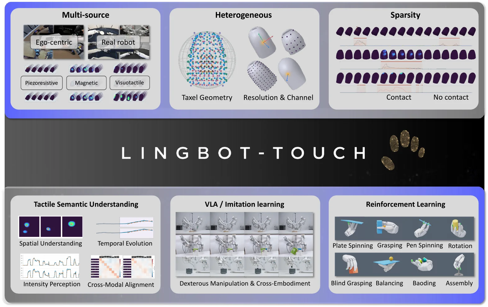
问题。人手的灵巧很大程度靠触觉，指尖失去感觉的人连划火柴、扣扣子都困难。机器人却几乎只靠视觉操作，看不出按得多重、抓得是否在滑、被手指挡住的地方发生了什么。
为什么触觉没跟上。传感器有的是，但缺少让视觉和语言得以扩展的三样东西：没有统一的输入格式；没有大规模语料（不同传感器的数据不能合并，每小时数据都要一只带传感器的手去碰真实世界）；没有公认的做法（触觉有用的证据散落在各自传感器、各自任务的研究里）。论文认为三个缺口同根：数据绑定了传感器的物理。去掉这部分，接触的表征就能共享。
做法。一个编码器覆盖压阻、磁、光学三种原理，不重训就能用到新传感器。三个设计：标准指尖空间（§3.2）；JEPA 式隐空间预测，适合稀疏无标签的信号（§3.2）；5,000 小时的手套加遥操作语料（§3.1）。
结果概览。冻结特征在见过的光学手和没见过的磁手上都能恢复接触力、位置、面积、短时动态，并能只凭触觉检索对应视频帧；在没见过的手上五个探针任务都好于加了专用适配器的 FTP-1。26 个真机任务上，加入 5.46M 的冻结编码器让 Diffusion Policy、π0.5、LingBot-VLA、T-Rex 的成功率提高“14 到 26 个百分点”（我核算是 13.9 到 24.8，见读者注 13）；加原始信号最多只有约一半的收益。仿真 RL 12 个任务 69% 对 46%（CNN）和 21%（无触觉）。Small 从 1K 到 5K 小时每个探针任务都单调变好；一种传感器的数据能改进另一种的表征；隐空间预测明显好于信号重建，VAE 甚至数据越多越差。
贡献。（1）5,000 小时、46.4 万回合、13.3 亿帧、24 类任务的语料；（2）标准指尖空间、分模态 tokenizer、共享 HaT，加上 Tactile-JEPA 目标（含掩码 warm-up 和布局增广）；（3）两只手的探针、26 个真机任务、12 个仿真 RL 任务，以及规模、多来源、目标函数的分析；（4）公开推理代码、少量样例数据、Tiny 和 Small 的权重。
2.1 触觉传感。磁式靠形变引起的磁场变化，例如 ReSkin、AnySkin，PaXini 的商用产品用霍尔效应。光学式靠内部成像看形变，例如 GelSight、DIGIT、Sharpa Wave 的指尖。电阻和电容式靠电阻或电容的变化，例如压阻手套 STAG、电容皮肤 DexSkin。它们测的是同一种物理接触，信号却在通道含义、空间分辨率、采样率、布局上都不同。
2.2 触觉表征学习。自监督方法大致三类：联合嵌入（DINO、CLIP、SigLIP、VideoCLIP）、生成式（MAE、VideoMAE）、联合嵌入预测（I-JEPA、V-JEPA、V-JEPA 2、LeJEPA、V-JEPA 2.1）。触觉方向：Sparsh 在光学触觉上比较了重建、自蒸馏和 JEPA；T3 用传感器专用编码器加共享 Transformer；UniTouch 把触觉接到多模态嵌入；AnyTouch 结合掩码建模、多模态对齐和跨传感器匹配，AnyTouch 2 强调力和时间动态；Sparsh-skin 学磁式触觉历史，Sparsh-X 融合 Digit 360 的多种信号；HTT 处理光学和阵列式的异构；FTP-1 把异构观测映射成形态感知的 token，新硬件要配传感器专用编码器。FTP-1 是本文主要对手。
本节（§3 到 §3.3）是逐段翻译，按原文段落顺序，公式编号同原文。原文以 CC BY 4.0 发布，翻译是改编作品，署名见页尾。方括号 [译注] 和读者注是我加的，不属于原文。术语：taxel 译作“触点”，即触觉传感器上的一个测量单元。
LingBot-Touch 从数据中学习可用于灵巧操作策略的触觉表征。这面临两个挑战。第一，触觉数据稀缺。和视觉、语言不同，目前没有任何触觉语料达到表征学习所需的规模。我们直接应对这一点：采集了 5,000 小时的触觉记录（§3.1）。由于这些数据横跨人戴的触觉手套和装有不同传感器的机器人手，它们在换能原理、触点布局、分辨率和采样率上都是异构的；我们用一个标准几何接口和分模态 tokenizer 来处理这一点，这些 tokenizer 再接入一个共享的 Haptic Transformer（§3.2）。第二，这些记录最多只有粗略的任务级描述，没有任何东西标注片段内部的接触物理，例如施加的力、接触发生在哪里、范围多大、何时开始和结束。因此模型必须自己发现接触的结构。我们用一个在隐空间中预测接触的自监督目标来应对，配合一个让训练在稀疏信号上保持稳定的掩码 warm-up（§3.2），以及让学到的表征能跨传感器迁移的布局增广（§3.3）。
问题表述。我们把一个归一化后的触觉片段表示为 \(\mathbf X\in\mathbb R^{T\times N\times3}\)，其中 \(T\) 是帧数，\(N\) 是所有手指上有效触点的总数。每个触点关联一个三维位置和一个手指编号。不同传感器的布局可以在触点数量和排列上不同；单通道的观测补零到公共的三通道接口。我们要找的是一个触觉基础编码器，把这些观测映射到一个共享的表征空间：\(\mathbf Z=E^{(g)}_\theta(\mathbf X;\mathbf A)\)，其中 \(g\) 选择传感模态的分支，\(\mathbf A\) 表示标准的五维 token 地址。
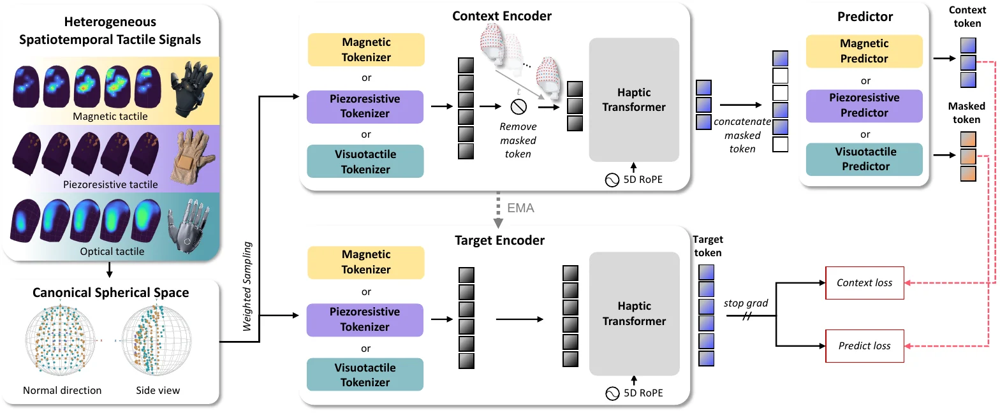
重画 · 图 3 架构图（可点击）· 结构按原文图 3 和 §3.2，形状按 Tiny 的 config.json；点任意方块看它做什么、张量多大、对应哪一段
如图 2 汇总，我们的多来源触觉数据集包含 4,983 小时记录、464,431 个交互回合、约 13.3 亿帧，来自压阻、磁和视触觉三类传感器。达到这个规模很难，因为每一小时都需要一只带传感器的手和真实世界发生物理交互。我们结合两种产生这类数据的方式。语料的主体由戴触觉手套的人类操作者产生。手套不需要机器人，所以一个操作者每天可以在普通环境里录几个小时的日常操作；这些第一视角记录覆盖的物体和行为范围很广，要让机器人按脚本做到同样的覆盖会很慢。这部分我们用压阻和磁式手套录制。其余部分来自遥操作：一套装有 Sharpa Wave 灵巧手的双臂系统（指尖带视触觉传感器），用我们之后要部署的那只手录制同样几类任务。手套占语料的三分之二，遥操作占其余三分之一。
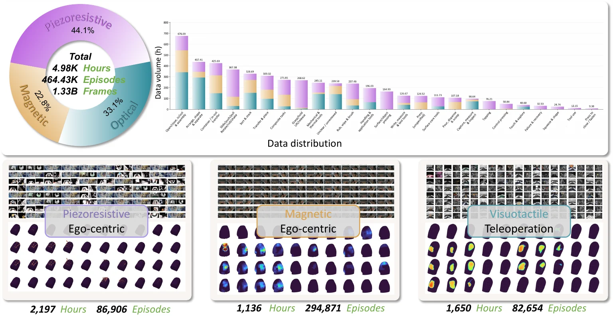
两种来源是按行为对齐的，不是按硬件对齐的。每个回合都被归入 24 个任务类别之一，从开、关、装配到擦拭、倒水和使用工具（图 2），大多数类别被不止一个来源覆盖。相反，传感器在换能原理、每指触点数、采样率和指尖几何上都不同（表 4）。用彼此不可比的传感器观察可比的交互，正是让一个共享编码器能够学到“不属于任何单一传感器的接触规律”的原因；§4.3 直接检验了这一点。
标注只到回合级的任务类别。没有任何片段带有力、接触位置或接触时间的标签。预训练时，我们以相等的采样概率从压阻、磁和视触觉三个来源抽取片段，所有监督都来自 §3.2 的隐空间预测目标。
[译注] “相等的采样概率”意味着三个来源各占约 1/3 的训练片段，而不是按小时数（44% / 23% / 33%）的比例；磁式数据相对被上采样，压阻相对被下采样。图 3 里的 “Weighted Sampling” 指的就是这一步。
按表 4：2,197 + 1,136 + 1,650 = 4,983 小时；86,906 + 294,871 + 82,654 = 464,431 个回合，都对得上。占比 2,197/4,983 = 44.09%、1,136/4,983 = 22.80%、1,650/4,983 = 33.11%，和图 2 的 44.1%、22.8%、33.1% 一致；手套合计 66.9%，即正文说的三分之二。平均回合长度差别很大：压阻约 91 秒，磁约 13.9 秒，视触觉约 72 秒。
“13.3 亿帧”我算不到：按表 4 每类取最高采样率，压阻 2,197 h × 3600 × 100 Hz + 磁 1,136 h × 3600 × 83.3 Hz + 视触觉 1,650 h × 3600 × 30 Hz = 13.10 亿帧，已经是上限，仍比 13.3 亿少 1.5%。一种可能是双手数据按单手分别计帧（双臂遥操作有两只手）。论文没说怎么计，未核实。
Tactile-JEPA 训练编码器 \(E^{(g)}_\theta\) 的方式是：在隐空间中，从一个部分可见的片段预测完整片段的表征（图 3）。给定片段 \(\mathbf X\)，我们把它的有效位置划分为被掩码集合 \(\mathcal M\) 和可见集合 \(\mathcal C\)，只把 \(\mathbf X_{\mathcal C}\) 交给上下文编码器。目标编码器处理完整片段，而预测器必须在每一个位置（不论被掩码还是可见）把上下文编码器的输出映射到目标编码器的输出。两个分支都不重建信号本身，所以目标不会被占据触觉片段大部分的近零背景所主导；§4.4 把这一选择和信号空间重建做了比较。要让这个方案跨传感器工作，需要三样东西：一个对任何传感器都有意义的 token 地址；一个除边界之外在各传感器间共享的骨干；以及适合稀疏信号的掩码和损失设计。下面逐一介绍。
标准指尖空间和 token 地址。触点下标描述的是传感器内部的排列顺序，但并不能在不同传感器之间对应到相同的物理位置。因此我们用一个连续的三维坐标加一个手指编号来描述一次测量发生在哪里，并把每种传感器的坐标放进同一个标准指尖空间。从每种传感器的几何资产出发，我们先把指尖对齐到标准朝向，再把它缩放、平移到一个共享的、以单位半径参考几何为基准的手指局部坐标系中（图 3 左下）：
其中 \(\tilde{\mathbf p}_i\) 是 token \(i\) 所对应触点在朝向对齐后的位置，\(\alpha>0\) 和 \(\mathbf b\in\mathbb R^3\) 针对每个“传感器–手指”模板离线固定。对 PaXini 和 XHand1，我们取 \(\alpha=1/r\)、\(\mathbf b=-\mathbf o/r\)，其中 \(\mathbf c\) 和 \(r\) 是触点位置与参考指尖几何的最小包围球的球心和半径。坐标原点是 \(\mathbf o=(u_x,c_y,u_z)\)，其中 \(\mathbf u\) 是指定的接触中心锚点，\(y\) 表示手指方向。Sharpa Wave 用它的密集表面点做同样的“高度对齐”归一化，并额外做一次深度方向的平移，以匹配 PaXini 的参考球。Juqiao 和 Wujie 使用固定的 PaXini 参考半径和接触区锚点。Tachin 在参考球内做最大的各向同性拟合，约束是指腹深度对齐，之后再乘一个 0.999 的缩放系数。这些参数在所有时间窗之间复用。
[译注] 直观地说：不管传感器原来多大、触点怎么排，都把它“套”到同一个半径为 1 的参考指尖上；原点放在指腹接触中心附近，\(y\) 轴沿手指方向。这样“指腹中央偏左一点”在任何传感器上都是差不多的坐标。
随后每个有效 token 得到一个五维地址：
其中 \(t_i\) 是 token 所在时间窗的下标，\(f_i\) 标识手指，\(L\) 是有效 token 的数量；同一个触点在不同时间窗里保持相同的 \(\mathbf p_i\)。地址只通过作用在注意力 query 和 key 上的旋转位置编码（RoPE）进入模型，五个轴各自作用在 head 维度的一段上。这种位置编码不要求固定的 token 数，也不需要传感器专用的位置表，因此一个共享骨干可以处理不同的传感器布局，并支持迁移到没见过的传感器。
最后，信号幅值按每种传感器测量范围对应的固定通道响应上下界做归一化：非负的法向响应映射到 [0, 1]，有符号的切向响应映射到 [−1, 1]。这些无量纲的幅值和标准几何一起，构成了多来源学习的公共输入接口。
代码 data_interfaces/geometry.py 的 normalize_positions 是 \(\mathbf p=(\mathbf p_{\rm sensor}R^\top-\mathbf o)/r+\text{offset}\)，比式 (1) 多了旋转 \(R\)（论文的“朝向对齐”）和一个 offset（对应 Sharpa Wave 的“额外深度平移”）。去掉这两项就是 \(\alpha=1/r,\ \mathbf b=-\mathbf o/r\)。height_aligned_origin 把原点的 \(y\) 换成包围球心的 \(y\)，正是 \(\mathbf o=(u_x,c_y,u_z)\)。这些标定参数不在公开代码里：Sharpa 样例已经是标准坐标，XHand 适配器内置了固定目标坐标，新传感器要自己标定。
两个小出入：文中 \(\mathbf c\) 定义后，式 (1) 只通过 \(\mathbf o\) 用到它的 \(y\) 分量；正文提到的 “Wujie” 不在表 4 的来源里（表 4 的压阻手套是 Juqiao、Xspark AI、TACHIN），可能是某款产品的另一个名字，未核实。
代码 tactile_jepa_inference/rope.py：每轴占 \(2\lfloor (d_{\rm head}/2)/5\rfloor\) 维。两个模型的 head 维度都是 64（Tiny 192/3 头，Small 384/6 头），所以每轴 12 维、五轴 60 维，剩下 4 维不旋转，论文没提这一点。频率：时间和手指 \(\theta=10000\)，空间三轴 \(\theta=100\)，空间坐标先乘 spatial_coordinate_scale \(=\pi/2\)（config 里是 1.5707963…）。单位半径坐标乘 \(\pi/2\) 后，最高频那一对的相位范围大约是 ±π/2，不会绕圈；最低频是 \(100^{-10/12}\approx0.0215\)。时间和手指用的是整数下标。
分模态 tokenizer 和共享的 Haptic Transformer。传感器专用的参数只限于网络边界处的浅层投影。我们用三个 tokenizer，磁、压阻、视触觉各一个。每个都是一个两层 MLP，把单个有效触点的连续两帧（共六个数）嵌入成一个 token，所以 tokenization 保留了传感器的空间粒度，\(T\) 帧的片段产生 \(L=NT/2\) 个 token。这些 token 随后进入 Haptic Transformer（HaT）：一个所有来源共享的 Transformer 编码器，通过上面的五轴 RoPE 引入时间、手指编号和标准位置。tokenizer 从异构测量中提取浅层特征，HaT 的逐层堆叠则在越来越高的抽象层次上学习共享的触觉表征。对传感组 \(g\)，我们把 tokenizer 连同 HaT 记作 \(E^{(g)}_\theta\)。预测器 \(P^{(g)}_\phi\) 遵循同样的模式：分组的输入、输出投影包在一个共享的预测 Transformer 外面，使用同样的五维位置编码。预测和目标为
其中分号之后的参数表示通过 RoPE 施加的位置条件，\(\Delta_{\mathcal M}\) 表示放在被掩码地址上的可学习掩码 token。上下文编码器只看可见 token；预测器把可见 token 的表征和掩码 token 一起处理，并为两组都输出预测。\(\bar E^{(g)}_{\bar\theta}\) 是目标编码器，带有下文所述的多层读出。预测和目标按它们原始的 token 下标对齐。
正文说 tokenizer 把“连续两帧、六个数”嵌成一个 token，\(L=NT/2\)。Hugging Face 上的 config.json：Tiny 的 tubelet_size 是 2，Small 是 4（仓库 DATA_INTERFACE_GUIDE.md 也写着 “Tiny uses tubelet size 2 and Small uses 4”）。所以 Small 每个 token 输入 12 个数，\(L=NT/4\)。参数量也印证这一点：Small 按 tubelet 4 算是 21,755,904，按 2 算是 21,748,992（≈21.75M），只有 4 能对上论文的 21.76M（算式见读者注 7）。表 1 的消融也说 2 或 4 帧一个 token 最好，两个尺寸各用了一个。
目标和损失。沿用 V-JEPA 2.1 的多层监督，目标编码器处理完整片段，我们从四个深度取它的特征，各自归一化后拼接，得到 \(\bar{\mathbf z}\)。上下文编码器也拼接对应层的特征，使预测器得到多层的上下文。我们对被掩码位置和可见位置同样施加监督，最小化
其中 \(D\) 是拼接后的特征维度，sg 表示停止梯度，\(\lambda=0.5\)。预测损失监督被掩码位置的表征，促使模型从可见上下文推断缺失的接触信息。上下文损失让可见位置的预测与从完整片段算出的目标对齐，促使模型保留已观测到的接触信息。损失在采样的片段上取平均。梯度更新在线的 tokenizer、HaT 和预测器，包括由 \(\phi\) 参数化的可学习掩码 token。目标 tokenizer 和目标编码器只通过对其在线对应部分做 EMA 来更新。下游任务中，我们冻结预训练好的 EMA 目标 tokenizer 和编码器。每个输入按传感器类型路由到对应的 tokenizer 分支，再由共享的 HaT 骨干处理。从 HaT 选出的四层取 token 特征，各自做 LayerNorm 后沿特征维拼接，为任务专用的探针和控制策略提供多个深度的表征。
[译注] EMA 是什么、为什么目标端不接梯度，见页尾读者问答 问 1。
config 的 output_layers 是 [2, 5, 8, 11]（从 0 数，即第 3、6、9、12 层），model.py 的 AddressTransformer 对每层单独 LayerNorm 再拼接。所以输出通道 \(C=4\times\)宽度：Tiny 768，Small 1536。§4.6 说每根手指的特征是 768 维、五指拼成 3,840 维，用的是 Tiny，对得上。代码里最后那个 self.norm 有参数但前向没用到。
掩码和掩码 warm-up。我们随机选择有效触点做掩码，并把同一个空间掩码延伸到整个片段，使 \(\mathcal M\) 包含一个被掩码触点的所有 token。因此上下文编码器无法在另一个时间步读到被掩码触点的响应，必须从周围的触点及其时间演化去推断。最终的掩码比例是有效触点的 80%。但触觉信号是稀疏的，这个比例不能从第一步就用上。如果接触涉及 \(k\) 个触点、掩码是均匀的，那么 \(k\) 个全部被藏住的概率约为 \(0.8^k\)；对于指尖通常按到的少数几个触点，相当一部分片段交给预测器的上下文里完全没有接触，而它的目标（从完整片段算出）却有接触。于是损失被那些无法从输入预测的目标主导，实践中我们观察到梯度爆炸和不稳定的优化。因此我们对掩码比例做 warm-up（图 4）：在前 300 个优化步内从 40% 线性升到 80%，之后保持不变。warm-up 只占训练中可以忽略的一小段（LingBot-Touch 一共预训练 200,000 次优化器更新）；它在编码器还没训练好时降低了抹掉全部接触证据的概率，然后把预测难度提高到其余预训练所用的水平。
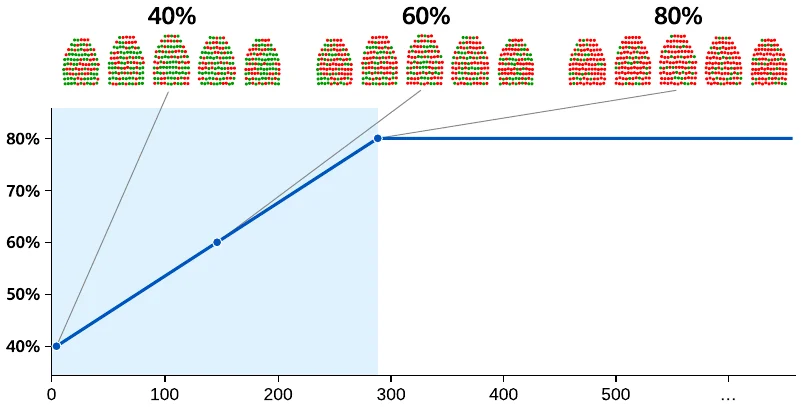
300 / 200,000 = 0.15% 的训练步数。按正文的近似：接触 3 个触点时，80% 掩码全部藏住的概率 \(0.8^3=0.512\)，40% 时 \(0.4^3=0.064\)；接触 2 个触点时是 0.64 对 0.16。按不放回抽样精确算（一指 96 个触点、掩码 77 个、接触 3 个）：\(\frac{77\cdot76\cdot75}{96\cdot95\cdot94}=0.512\)，和近似一样。动画第 6 幕在一个玩具指尖上当场算这条曲线。注意表 1 的消融默认配置用的是 90% 掩码，不是最终的 80%，表注说明了默认配置只作公共基线。
自己画的 · 11 幕 3D 框架动画
数据 → 标准指尖空间 → 5D 地址和 RoPE → tokenizer → 掩码 warm-up → Tactile-JEPA 训练 → 布局增广 → 冻结编码器和探针 → 接入策略 → 结果。下面嵌的是第 7 幕（训练回路）。网络尺寸来自 Hugging Face 上的 config.json；触点布局、信号都是示意。
§3.2 的标准指尖空间让每种传感器的触点有了可比的坐标，但它本身并不能让编码器对布局无所谓。预训练恰好只呈现三种布局，每种传感器一种，而 RoPE 把它们的精确坐标交给骨干，所以没有什么能阻止骨干记住这三组点。一只从没见过的手就是第四组点。因此我们把布局当作干扰变量，在预训练中从两个方面随机化：指尖被采样的密度，以及每个触点的精确位置。§4.3 在一个不在预训练中的传感器上检验了结果，§4.5 对增广做了消融。
多种采样密度。我们让模型在多种空间分辨率下看到同一次交互。对磁式传感，我们从原生布局（拇指 116 个触点、其余每指 96 个）构造出每指 24、32、48、64、76 和 96 个触点的视图。96 触点视图使用拇指触点的一个固定子集，并保留其余手指的全部触点；更低分辨率的视图通过对原生测量重采样得到。对视触觉传感，我们把形变图响应聚合成每指 32、96 或 200 个虚拟触点。重采样使用基于源位置和目标位置之间三维距离的局部高斯权重，作用在观测到的响应通道上。对每个训练片段，我们从其来源可用的分辨率中均匀抽取一个视图。压阻来源保留原生布局。特别是 Juqiao 和 Xspark 织物手套的指尖阵列很粗，分别只有 3 × 3 和 4 × 4 个触点，进一步降采样会丢掉本已有限的空间细节，所以不做。在多分辨率视图之间，底层的交互是共享的，变化的只是空间采样，这促使表征在不同分辨率之间泛化。
触点位置扰动。为了抑制基于精确坐标模板的捷径，我们给标准触点位置加上以局部间距为界的偏移：
其中 \(\mathbf p_i\) 是式 (1) 的标准坐标，\(d_i\) 是触点 \(i\) 到同一手指上最近的其他有效触点的距离。这个上界随局部采样密度缩放，保证每个位移都留在该触点自己的邻域内。偏移对每个训练片段重新采样，并且一个触点在所有时间窗之间、在上下文分支和目标分支之间共用同一个偏移，所以两个分支看到相同的几何，目标和上下文保持一致。扰动后的坐标替换地址中的 \(\mathbf p_i\)，得到 \(\mathbf a'_i=(t_i,f_i,\mathbf p'_i)\)。响应序列及其时间对应关系不受影响；只有位置编码看到一个邻近但不同的布局。数据增广的消融见表 1。结果表明，数据增广显著提升了 LingBot-Touch 在下游触觉理解任务上的表现。
[译注] 为什么上界取 \(0.5\,d_i\)：两个相邻触点各自最多移动半个间距，最坏情况是正好移到同一点，但不会“越过”对方交换位置，所以触点之间的相对顺序大体保留。这是我的理解，原文只说“留在自己的邻域内”。
这一节始终冻结预训练编码器，只训练轻量探针，所以数字衡量的是表征本身。三个问题：表征是否暴露了接触物理，在没见过的传感器上也是否如此（§4.2）；时长、传感器种类、模型大小怎样影响它（§4.3）；哪些设计重要（§4.4、§4.5）。最后看隐空间本身（§4.6）。
平台。两只灵巧手。Sharpa Wave：视触觉指尖，正是预训练机器人数据的来源，属于“见过”。每个指尖原生形变图 240×240、30 Hz，空间降采样到 96 个触点输入模型。XHand1：磁式指尖，型号不在预训练数据里，分辨率、采样率、触点位置都和预训练手套不同。每指 120 个原生触点、30 Hz，实验里降采样到每指 96 个（模型也能直接吃 120 个）。XHand1 走和其他磁式来源相同的流程：用传感器几何映射到标准空间，交给磁式 tokenizer。为适配新传感器，不更新任何 tokenizer 或编码器参数。
模型。LingBot-Touch-Tiny 和 -Small，参数 5.46M 和 21.76M，都是 12 层，宽度 192 和 384。参数量包括 tokenizer 和共享 HaT，不含预训练用的预测器和下游头。除非另说，本节用全量数据预训练的 Small。
按 config（宽度 \(d\)，12 层，MLP 比 4，三个 tokenizer，四个输出 LayerNorm，加一个未使用的末层 LayerNorm）：
Tiny 合计 5,455,488，Small（\(d=384,\tau=4\)）合计 21,755,904，四舍五入就是 5.46M 和 21.76M。仓库的 tests/test_release.py 里也有一条正则专门禁止 README 出现 “5,455,488|21,755,904”，说明作者内部用的正是这两个数。Hugging Face 上 encoder.pt 的大小 21,859,018 和 87,060,996 字节，各减去参数量 × 4 字节后剩约 37 KB，是 float32 权重加序列化开销，也对得上。
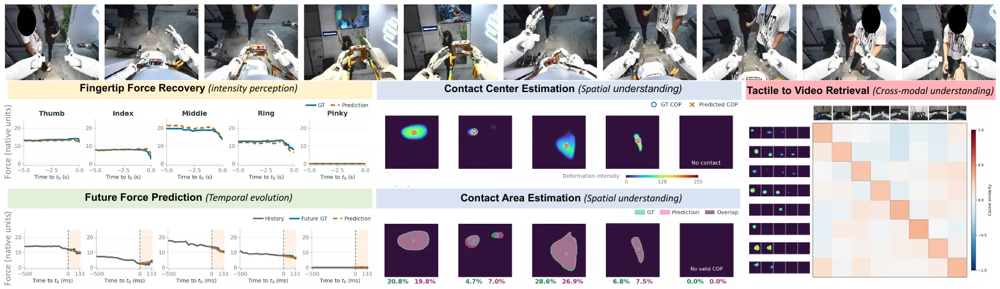
协议。按 V-JEPA 的评测：冻结 EMA 目标 tokenizer 和目标编码器，读出多层拼接特征，每个任务训一个注意力探针（一层交叉注意力池化加线性头）。数据规模和超参见附录表 5、表 6。
任务。五个任务测四个方面：强度（回归合力，单位牛）；空间（接触中心，毫米误差；接触面积，覆盖率误差，单位百分点）；时间（由触觉历史和未来关节状态预测之后四帧的合力）；跨模态（找同一时刻录的视频帧，top-5 召回）。
对手是 FTP-1：为异构传感器设计，带磁式分支，范围最接近。做法是冻结它公开的共享触觉骨干，每个传感器、每个探针单独训一个输入适配器：Sharpa Wave 的适配器编码每指 96 个形变值（替换原来的图像 tokenizer），XHand1 的编码每指 120 个三通道触点；适配器和探针头一起在下游训练集上训 100 轮。LingBot-Touch 只训探针头，不加适配器。
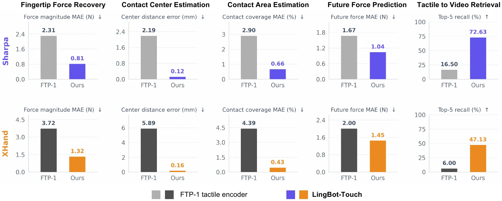
图 6 的数字（照录原文图中标注）
| 手 | 方法 | 力 MAE (N) ↓ | 中心误差 (mm) ↓ | 覆盖率 MAE (pp) ↓ | 未来力 MAE (N) ↓ | 检索 R@5 (%) ↑ |
|---|---|---|---|---|---|---|
| Sharpa Wave（见过） | FTP-1 | 2.31 | 2.19 | 2.90 | 1.67 | 16.50 |
| LingBot-Touch | 0.81 | 0.12 | 0.66 | 1.04 | 72.63 | |
| XHand1（没见过） | FTP-1 | 3.72 | 5.89 | 4.39 | 2.00 | 6.00 |
| LingBot-Touch | 1.32 | 0.16 | 0.43 | 1.45 | 47.13 |
见过的传感器。Sharpa Wave（量程 0 到 30 N）上，力误差 0.81 N、接触中心 0.12 mm、覆盖率 0.66 个百分点；FTP-1 是 2.31 N、2.19 mm、2.90 点。未来力 1.67 降到 1.04 N。差距最大的是检索：top-5 召回从 16.5% 到 72.6%，说明表征里有整个交互的信息，不只是局部接触。这些优势不依赖全量语料：1,000 小时时力和未来力误差已低于 2 N，中心低于 1 mm，覆盖率低于 2 点（图 7）。
没见过的传感器。XHand1 上不更新任何参数，四个物理任务 1.32 N、0.16 mm、0.43 点、1.45 N，检索 47.1%；FTP-1 配了 XHand1 专用适配器也只有 3.72 N、5.89 mm、4.39 点、2.00 N、6.0%。空间任务差距最大：没见过的传感器上的中心误差，比 FTP-1 在见过的传感器上低一个数量级以上。五个任务里四个在 XHand1 上比 Sharpa Wave 差，符合预期，但任务排序和与 FTP-1 的差距在两只手上一样。论文认为这正是标准指尖空间和布局增广想要的效果。
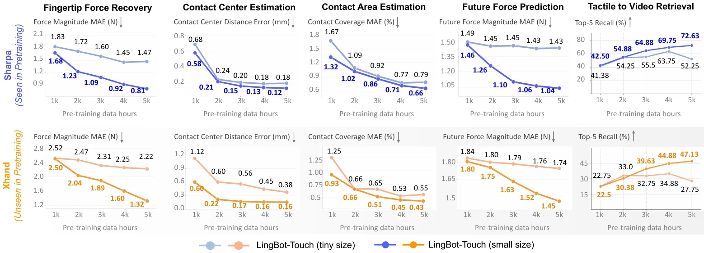
| 手 | 任务 | 模型 | 1K | 2K | 3K | 4K | 5K |
|---|---|---|---|---|---|---|---|
| Sharpa | 力 MAE (N) | Tiny | 1.83 | 1.72 | 1.60 | 1.45 | 1.47 |
| Small | 1.68 | 1.23 | 1.09 | 0.92 | 0.81 | ||
| 中心 (mm) | Tiny | 0.68 | 0.24 | 0.20 | 0.18 | 0.18 | |
| Small | 0.58 | 0.21 | 0.15 | 0.13 | 0.12 | ||
| 覆盖率 (pp) | Tiny | 1.67 | 1.09 | 0.92 | 0.77 | 0.79 | |
| Small | 1.32 | 1.02 | 0.86 | 0.71 | 0.66 | ||
| 未来力 (N) | Tiny | 1.49 | 1.45 | 1.45 | 1.43 | 1.43 | |
| Small | 1.46 | 1.26 | 1.10 | 1.06 | 1.04 | ||
| 检索 R@5 (%) | Tiny | 41.38 | 54.25 | 55.5 | 63.75 | 52.25 | |
| Small | 42.50 | 54.88 | 64.88 | 69.75 | 72.63 | ||
| XHand1 | 力 MAE (N) | Tiny | 2.52 | 2.47 | 2.31 | 2.25 | 2.22 |
| Small | 2.50 | 2.04 | 1.89 | 1.60 | 1.32 | ||
| 中心 (mm) | Tiny | 1.12 | 0.60 | 0.56 | 0.45 | 0.38 | |
| Small | 0.60 | 0.22 | 0.17 | 0.16 | 0.16 | ||
| 覆盖率 (pp) | Tiny | 1.25 | 0.66 | 0.65 | 0.53 | 0.55 | |
| Small | 0.93 | 0.66 | 0.51 | 0.45 | 0.43 | ||
| 未来力 (N) | Tiny | 1.84 | 1.80 | 1.79 | 1.76 | 1.74 | |
| Small | 1.80 | 1.75 | 1.63 | 1.52 | 1.45 | ||
| 检索 R@5 (%) | Tiny | 22.75 | 33.0 | 32.75 | 34.88 | 27.75 | |
| Small | 22.5 | 30.38 | 39.63 | 44.88 | 47.13 |
更多小时。Tiny 和 Small 各在 1K 到 5K 小时的五个子集上预训练。Small 每加一千小时，两只手的每个任务都变好或持平；Sharpa Wave 上力误差 1.68 → 0.81 N，检索 42.5% → 72.6%。Tiny 到 4K 左右就平了，5K 时两只手的检索召回都下降。论文的解读是此时瓶颈是模型而不是数据，容量要跟着语料涨。§5 的真机结果也随预训练时长变好。
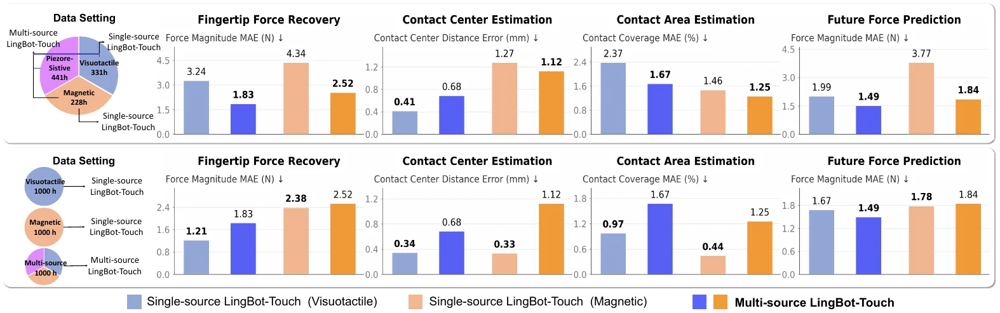
图 8 的数字（照录图中标注；“单”是单来源，“多”是同一个 1,000 小时多来源模型）
| 设置 | 探测的手 | 力 (N) | 中心 (mm) | 覆盖率 (pp) | 未来力 (N) |
|---|---|---|---|---|---|
| 单 · 视触觉 331 h | Sharpa | 3.24 | 0.41 | 2.37 | 1.99 |
| 单 · 视触觉 1,000 h | Sharpa | 1.21 | 0.34 | 0.97 | 1.67 |
| 多 · 1,000 h | Sharpa | 1.83 | 0.68 | 1.67 | 1.49 |
| 单 · 磁 228 h | XHand1 | 4.34 | 1.27 | 1.46 | 3.77 |
| 单 · 磁 1,000 h | XHand1 | 2.38 | 0.33 | 0.44 | 1.78 |
| 多 · 1,000 h | XHand1 | 2.52 | 1.12 | 1.25 | 1.84 |
固定本传感器数据，加别人的。单来源视触觉 331 小时、单来源磁 228 小时；多来源模型在此之上加 441 小时压阻和另一种传感器，合计 1,000 小时。八个“传感器-任务”对里七个变好。磁这边全部变好（力 4.34 → 2.52 N，未来力 3.77 → 1.84 N）；视触觉的力、覆盖率、未来力变好，接触中心从 0.41 变差到 0.68 mm。
固定总预算。每个单来源模型给 1,000 小时本传感器数据，对比同样 1,000 小时的混合（其中视触觉 33%、磁 23%）。这次单来源在本传感器上八对赢七对：空间任务差距大（中心 0.34 对 0.68 mm、0.33 对 1.12 mm），时间预测差距小，视触觉的未来力反而是多来源更好（1.49 对 1.67 N）。两组结论一致：力和动态能跨传感器迁移，本传感器数据少时别人的小时数能顶上；空间精度要看到本传感器自己的布局和分辨率，固定预算下混合要牺牲一些，换来一个服务三类传感器的编码器。
什么都没贡献的传感器。XHand1 不在任何语料里，却从每个旋钮里获益：它的探针曲线随小时数的形状和 Sharpa Wave 一样，图 8 的磁式柱子就是 XHand1 结果。论文的说法是，数据越多越杂，学到的越是“接触”的表征，而不是某个换能器的。
要点。把所有传感器合起来用，模型随数据一起放大。论文进一步说：小时数能跨换能器迁移，所以扩数据时该选的不是最强的传感器，而是能力和采集便利的平衡点，这就是三分之二语料来自能整天戴着的手套的原因。
结论先说：同样数据、匹配超参，VAE 和 MAE 都做信号重建，LingBot-Touch 做隐空间预测；后者在两个数据规模的每个任务上都最好或并列最好，重建目标不随数据扩展。
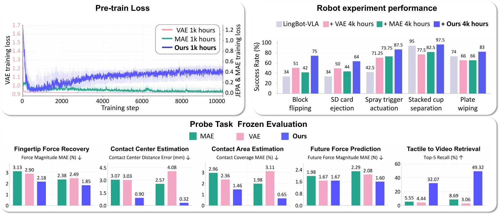
图 9 下方的数字（照录图中标注，三者都是 5.46M 参数）
| 数据 | 目标 | 力 (N) | 中心 (mm) | 覆盖率 (pp) | 未来力 (N) | 检索 R@5 (%) |
|---|---|---|---|---|---|---|
| 1K h | MAE | 3.13 | 3.07 | 2.96 | 1.98 | 5.55 |
| VAE | 2.90 | 3.03 | 2.36 | 1.67 | 4.44 | |
| Ours | 2.18 | 0.90 | 1.46 | 1.67 | 32.07 | |
| 4K h | MAE | 2.38 | 2.57 | 1.98 | 2.29 | 8.69 |
| VAE | 2.49 | 4.08 | 3.11 | 2.08 | 3.06 | |
| Ours | 1.85 | 0.32 | 0.65 | 1.60 | 49.32 |
训练曲线。VAE 几百步内就降到低平台；MAE 收敛到小的重建误差。两者的优化信号都不对应好的表征。本文的损失先降后升到非零平台，这是 EMA 目标在移动的正常表现。三种损失不在同一空间，只通过探针比较。
探针。1K 小时时本文把中心误差降到重建模型的三分之一以下（0.90 mm 对 VAE 3.03、MAE 3.07），检索 32.1% 对 4.4% 和 5.6%。4K 小时五个任务都变好，到 0.32 mm 和 49.3%。重建目标不这样：VAE 五个任务里四个随数据变差（中心 3.03 → 4.08 mm，检索 4.4% → 3.1%）；MAE 四个变好，但检索一直低于 9%。论文的解释：重建一个大多是零的信号，奖励的是背景建模，背景再多也没用；隐空间预测从不把背景当目标。
右上的真机结果（我按图中数字算的平均）：五个任务上 LingBot-VLA 本身 55.9%，加 4K 的 VAE 63.15%，加 MAE 61.65%，加本文 81.4%。VAE 和 MAE 在叠杯分离（95 → 77.5 / 82.5）和擦盘子（74 → 66）上都让策略变差。
图 9 的 LingBot-Touch 说是 5.46M（即 Tiny），1K 和 4K 小时。但它和图 7 的 Tiny 在同样小时数下差得不少：1K 时图 9 是 2.18 N、0.90 mm、1.46 pp、1.67 N、32.07%，图 7 是 1.83、0.68、1.67、1.49、41.38；4K 时图 9 是 1.85、0.32、0.65、1.60、49.32，图 7 是 1.45、0.18、0.77、1.43、63.75。十个数里图 7 有八个更好，只有两格覆盖率是图 9 更好。论文只说图 9 三种方法“超参匹配”，没说和主模型的训练设置有何不同，大概是为了和 VAE、MAE 对齐用了另一套训练预算。所以图 9 只适合看三种目标之间的相对差距，不要拿它的绝对值和图 7 比。原因未核实。文字里的说法（最好或并列最好、VAE 四项变差、MAE 四项变好且检索低于 9%）我逐格核过，都成立；1K 的未来力是 VAE 和本文并列 1.67。
结论先说：80% 空间掩码、贯穿整段的时间掩码、2 到 4 帧一个 token、32 帧片段、0.999 → 1.0 的 EMA 动量、数值加位置增广、分组 tokenizer 和按组路由的预测器，这些都明显有用；上下文损失近乎中性。所有变体都是 Tiny、1K 小时、100 轮，只有块内比较有意义。
表 1 · Sharpa Wave 上的消融（照录原文。默认配置：90% 空间掩码、时间掩码 [75, 75]%、只做数值增广、4 帧片段、1 帧 tubelet、恒定 EMA 0.99925、共享 tokenizer 和预测器接口、目标加上下文损失；默认配置不是最终配置）
| 消融 | 设置 | 力 (N) ↓ | 中心 (mm) ↓ | 覆盖率 (pp) ↓ | 未来力 (N) ↓ | R@5 (%) ↑ |
|---|---|---|---|---|---|---|
| 空间掩码 (%) | 20 | 2.074 | 1.168 | 2.173 | 1.522 | 23.875 |
| 40 | 2.189 | 0.945 | 2.328 | 1.526 | 25.375 | |
| 60 | 2.574 | 1.762 | 3.671 | 1.567 | 24.500 | |
| 80 | 1.688 | 0.223 | 0.873 | 1.452 | 35.375 | |
| 90 | 2.284 | 2.324 | 3.429 | 1.624 | 14.375 | |
| 时间掩码（占片段 %） | [50, 50] | 2.576 | 0.909 | 2.207 | 1.552 | 20.000 |
| [75, 75] | 2.284 | 2.324 | 3.429 | 1.624 | 14.375 | |
| [75, 100] | 2.155 | 0.728 | 2.017 | 1.556 | 22.750 | |
| [100, 100] | 1.886 | 0.904 | 1.305 | 1.551 | 26.500 | |
| 数据增广 | 数值 + 位置 | 1.590 | 0.239 | 0.931 | 1.478 | 37.125 |
| 只数值 | 2.284 | 2.324 | 3.429 | 1.624 | 14.375 | |
| 只位置 | 1.702 | 0.305 | 0.988 | 1.453 | 30.625 | |
| 无 | 1.808 | 0.639 | 1.428 | 1.508 | 25.625 | |
| 片段长度（帧） | 4 | 2.284 | 2.324 | 3.429 | 1.624 | 14.375 |
| 8 | 2.383 | 2.407 | 4.519 | 1.655 | 9.500 | |
| 16 | 1.806 | 0.689 | 1.332 | 1.529 | 29.250 | |
| 32 | 1.538 | 0.207 | 0.765 | 1.480 | 33.250 | |
| tubelet（帧/token） | 1 | 2.284 | 2.324 | 3.429 | 1.624 | 14.375 |
| 2 | 1.653 | 0.212 | 0.889 | 1.400 | 33.375 | |
| 4 | 1.496 | 0.182 | 1.027 | 1.446 | 35.125 | |
| 8 | 2.931 | 2.193 | 4.218 | 1.648 | 13.375 | |
| EMA 动量 | 0.998 → 1.0 | 7.221 | 3.401 | 8.221 | 1.728 | 1.375 |
| 0.999 → 1.0 | 1.529 | 0.271 | 1.361 | 1.463 | 34.625 | |
| 0.99925（恒定） | 2.284 | 2.324 | 3.429 | 1.624 | 14.375 | |
| tokenizer / 预测器接口 | 共享 / 共享 | 2.284 | 2.324 | 3.429 | 1.624 | 14.375 |
| 分组 / 按组路由 | 1.682 | 0.702 | 1.147 | 1.562 | 21.750 | |
| 训练目标 | 目标 + 上下文 | 2.284 | 2.324 | 3.429 | 1.624 | 14.375 |
| 只目标 | 2.303 | 2.380 | 3.137 | 1.610 | 14.000 |
掩码。80% 在五个指标上都最好，比 90% 力误差 2.28 → 1.69 N、检索 14.4% → 35.4%。V-JEPA 报告更高比例给更抽象的特征；稀疏触觉则要和上下文里还剩多少接触证据平衡，这和 warm-up 的动机相同。掩码贯穿整段在五个指标里赢四个，说明不能让预测器从相邻时刻抄被掩码的触点。
片段长度和 tubelet。对 30 Hz 的视触觉，32 帧（约 1.07 s）、每 token 2 或 4 帧（67 或 133 ms）最好；1 帧和 8 帧明显差。这些值和采样率绑定，换到别的采样率不能按帧数照搬。
增广。数值加位置在五个指标里赢四个，检索从无增广的 25.6% 升到 37.1%；只做位置增广在未来力上略好（1.45 对 1.48 N）。
EMA 动量。0.999 → 1.0 的调度五项全赢；从 0.998 起步会塌缩，力误差超过 7 N、检索约 1%。目标移动得多快，对稀疏信号上的隐空间目标训练非常敏感。
接口和目标。分组 tokenizer 加按组路由的预测器接口五项全赢，中心误差 2.32 → 0.70 mm，说明 §3.2 的传感器专用边界层有必要。加上下文损失近乎中性：三项略好，两项略差。
默认配置那一行（2.284 / 2.324 / 3.429 / 1.624 / 14.375）在八个块里出现八次，数字完全一样，说明块之间共用同一个基线。正文对表 1 的每条说法我逐格核过：80% 五项最好；整段时间掩码四项最好（中心是 [75, 100] 的 0.728 更好）；数值加位置四项最好；32 帧五项最好；EMA 0.999 → 1.0 五项最好；分组接口五项最好；上下文损失三好两差。都成立。
没回答的：最终模型的片段长度。表 1 说 32 帧最好，但下游探针（表 6）用 16 帧窗口，真机用 16 帧，仿真用 8 帧，公开样例也是 16 帧；预训练最终用多长，论文没写。
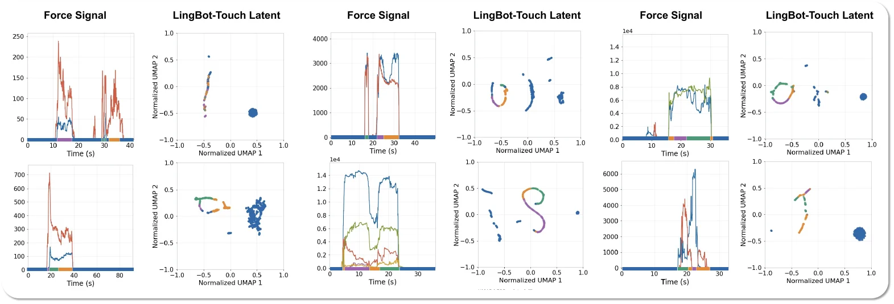
做法。用全量数据预训练的 Tiny，从冻结目标编码器提 16 帧、步长 2 帧的窗口特征；每根手指在时间和触点上平均，五根手指的 768 维拼成 3,840 维，再用 UMAP 投到二维。点按窗口的标注阶段上色：无接触、接触开始、力增加、力减小、松开。
观察。每个例子里无接触窗口都缩成远离其他点的一团，这在意料之中（输入接近零）。重要的是接触内部的结构：接触窗口形成按时间排序的平滑曲线，响应增强、减弱、在手指间转移时，相邻窗口在曲线上相邻，同一交互的不同阶段占曲线的不同段。也就是说表征保留了接触过程中的连续变化，而不只是“有没有接触”，而这正是策略掌握动作时机需要的。
这一节问机器人能不能用上这个表征。LingBot-Touch 始终是即插即用的模块：编码器冻结，token 附加到策略原有的观测上，策略和训练的其他部分不变。三个问题：真机上模仿学习和 VLA 能提高多少、比直接加原始信号多多少（§5.2）；仿真 RL 的最终表现和训练稳定性（§5.3）；探针上的排序能不能转化到策略上（§5.4）。
平台。同样两只手，各装在双臂系统上。两只手也都做了仿真，触觉信号按几何穿透深度渲染成形变图（附录 C）。
接入。真机上用冻结的 Tiny（5.46M），对每只活动的手编码 30 Hz 采样的 16 帧窗口。可训练的交叉注意力读出把输出聚合成每只手 40 个 token，线性投影到各策略的条件维度，作为视觉和本体之外的额外条件输入。编码器只给 T-Rex、π0.5、LingBot-VLA 增加 0.16%、0.15%、0.13% 的参数。仿真里同一个编码器处理 8 帧窗口，可训练读出压缩成特征，和非触觉观测拼接作为策略输入。
5.46M 除以 0.16%、0.15%、0.13%，分别是约 3.41B、3.64B、4.20B。考虑百分比是四舍五入到两位小数，范围是 T-Rex 3.31 到 3.52B、π0.5 3.52 到 3.77B、LingBot-VLA 4.04 到 4.37B。论文没给三个策略的参数量，也没说分子是否包括 40 个 token 的读出和投影层，所以这些区间未核实，只说明“不到 0.2%”这一说法自洽。
真机协议。四种策略：Diffusion Policy（模仿学习基线），π0.5、LingBot-VLA、T-Rex（VLA 基线；T-Rex 论文没给编号）。每种三个配置：不加触觉；加原始触觉信号；加 LingBot-Touch token。三者看同样的示教：每任务 200 条，双手任务 500 条；每任务连续评测 20 次。
仿真协议。12 个灵巧任务，Sharpa Wave 8 个、XHand1 4 个，沿用之前的触觉 RL 套件：Sharpa Wave 上是 Baoding 球旋转、手内旋转、拧螺母、转盘子、转笔、盲抓、抓握稳定、托球平衡；XHand1 上是 Baoding 球、托球平衡、盲抓、抓握稳定。PPO、三个种子，比较五种触觉观测：无、每触点二值接触、原始信号、和策略一起训练的 CNN 特征、冻结的 LingBot-Touch 特征。
结论先说：四种策略在 26 个任务上平均提高 13.9、21.8、24.8、23.2 个点；原始信号只提高 7.0、6.6、8.2、11.2 个点，而且在 104 对里有 22 对变差。在没见过的 XHand1 上，原始信号几乎没用，LingBot-Touch 仍然提高 13.8 到 24.5 个点。
任务。26 个任务（Sharpa Wave 20、XHand1 6），挑的是触觉有用的：精细操作（弹出 SD 卡、拔笔帽、插吸管）、接触丰富（拧瓶盖、扣喷壶扳机、拉拉链）、易碎和可变形物体（转移鸡蛋、运送薄壁杯、抽袋子）、触觉辨别（按软硬分类、按麻将牌面分类）、双手配合（交接盒子、抽书）。
表 2 · 真机成功率的均值（照录原文。20 次试验，HaT-Tiny，4K 小时预训练；Base 原策略，+T 加原始触觉，Ours 加 LingBot-Touch）
| 手 | Diffusion Policy | π0.5 | LingBot-VLA | T-Rex | ||||||||
|---|---|---|---|---|---|---|---|---|---|---|---|---|
| Base | +T | Ours | Base | +T | Ours | Base | +T | Ours | Base | +T | Ours | |
| Sharpa Wave（20 个） | 22.31 | 30.06 | 35.51 | 47.56 | 56.70 | 68.58 | 45.60 | 56.29 | 72.51 | 44.06 | 57.99 | 70.05 |
| XHand1（6 个） | 19.38 | 24.00 | 35.67 | 49.71 | 48.00 | 74.17 | 57.21 | 57.21 | 75.04 | 49.96 | 51.92 | 63.79 |
| 26 个任务（我算的加权） | 21.63 | 28.66 | 35.55 | 48.06 | 54.69 | 69.87 | 48.28 | 56.50 | 73.09 | 45.42 | 56.59 | 68.61 |
| 手 | 任务 | Diffusion Policy | π0.5 | LingBot-VLA | T-Rex | ||||||||
|---|---|---|---|---|---|---|---|---|---|---|---|---|---|
| Base | +T | Ours | Base | +T | Ours | Base | +T | Ours | Base | +T | Ours | ||
| Sharpa Wave | 翻单页 Single-page turning | 3.75 | 21.25 | 30.00 | 30.00 | 76.25 | 86.25 | 23.75 | 60.00 | 67.50 | 52.50 | 55.00 | 67.50 |
| 擦盘子 Plate wiping | 24.00 | 44.00 | 47.00 | 68.00 | 74.00 | 76.00 | 74.00 | 81.00 | 83.00 | 50.00 | 75.00 | 75.00 | |
| 叠杯分离 Stacked cup separation | 50.00 | 45.00 | 70.00 | 61.25 | 67.50 | 72.50 | 95.00 | 70.00 | 97.50 | 42.50 | 65.00 | 80.00 | |
| 麻将分类 Mahjong sorting | 22.50 | 40.00 | 28.75 | 35.00 | 40.00 | 70.00 | 28.75 | 5.00 | 56.25 | 35.00 | 47.50 | 58.75 | |
| 药盒补装 Pillbox refilling | 8.75 | 12.50 | 12.50 | 22.50 | 22.50 | 32.50 | 22.50 | 25.00 | 31.25 | 26.25 | 23.75 | 41.25 | |
| 抽名片 Business card extraction | 20.00 | 32.50 | 56.25 | 50.00 | 50.00 | 75.00 | 42.50 | 61.25 | 75.00 | 65.00 | 57.50 | 75.00 | |
| 发牌 Card dealing | 46.25 | 60.00 | 75.00 | 56.25 | 75.00 | 78.75 | 58.75 | 65.00 | 75.00 | 73.75 | 78.75 | 88.75 | |
| 运薄壁杯 Deformable cup transport | 46.25 | 42.50 | 63.75 | 72.50 | 81.25 | 78.75 | 93.30 | 93.75 | 96.70 | 95.00 | 97.50 | 100.00 | |
| 弹出 SD 卡 SD card ejection | 6.00 | 10.00 | 16.00 | 47.00 | 69.00 | 64.00 | 34.00 | 72.00 | 64.00 | 32.00 | 84.00 | 92.00 | |
| 翻方块 Block flipping | 9.00 | 8.00 | 10.00 | 67.00 | 84.00 | 90.00 | 34.00 | 48.00 | 75.00 | 29.00 | 73.00 | 83.00 | |
| 拔笔帽 Pen uncapping | 0.00 | 0.00 | 0.00 | 36.00 | 52.00 | 59.00 | 33.00 | 48.00 | 65.00 | 22.00 | 33.00 | 61.00 | |
| 拧瓶盖 Cap twisting | 56.25 | 70.00 | 76.25 | 78.75 | 85.00 | 91.25 | 75.00 | 75.00 | 87.50 | 56.25 | 62.50 | 90.00 | |
| 抽袋子 Bag extraction | 11.00 | 20.00 | 16.00 | 47.50 | 40.00 | 53.75 | 46.25 | 60.50 | 82.50 | 40.00 | 46.25 | 62.50 | |
| 插吸管 Straw insertion | 14.00 | 18.00 | 21.00 | 30.00 | 30.00 | 41.00 | 35.00 | 56.00 | 59.00 | 29.00 | 44.00 | 44.00 | |
| 开风扇 Fan opening | 17.50 | 27.50 | 41.25 | 25.00 | 45.00 | 52.25 | 31.25 | 50.00 | 70.00 | 58.75 | 51.25 | 66.25 | |
| 拉拉链 Zipper closing | 14.00 | 9.00 | 22.00 | 39.00 | 15.00 | 59.00 | 11.00 | 16.00 | 55.00 | 15.00 | 17.00 | 42.00 | |
| 扣喷壶 Spray trigger actuation | 30.00 | 32.50 | 28.75 | 51.25 | 60.00 | 71.25 | 42.50 | 60.00 | 87.50 | 28.75 | 65.00 | 76.25 | |
| 软硬分类 Stiffness sorting | 48.00 | 52.50 | 28.75 | 41.25 | 57.50 | 81.25 | 37.50 | 56.25 | 72.50 | 32.50 | 63.75 | 68.75 | |
| 抽书 Book extraction | 11.00 | 38.00 | 41.00 | 36.00 | 62.00 | 76.00 | 36.00 | 64.00 | 81.00 | 50.00 | 69.00 | 59.00 | |
| 交接盒子 Box handover | 8.00 | 18.00 | 26.00 | 57.00 | 48.00 | 63.00 | 58.00 | 59.00 | 69.00 | 48.00 | 51.00 | 70.00 | |
| XHand1 | 翻单页 | 11.25 | 35.00 | 48.75 | 53.75 | 50.00 | 91.25 | 65.00 | 67.50 | 68.75 | 47.50 | 50.00 | 62.50 |
| 转移鸡蛋 Egg transfer | 32.50 | 25.00 | 22.50 | 67.50 | 65.00 | 83.75 | 65.00 | 28.75 | 66.25 | 55.00 | 33.75 | 68.75 | |
| 叠杯分离 | 27.50 | 32.50 | 41.25 | 32.50 | 32.50 | 72.50 | 58.75 | 85.00 | 86.25 | 41.25 | 46.25 | 55.00 | |
| 运薄壁杯 | 11.00 | 23.00 | 26.00 | 52.00 | 48.00 | 54.00 | 37.00 | 58.00 | 90.00 | 44.00 | 53.00 | 63.00 | |
| 软硬分类 | 30.00 | 22.50 | 47.50 | 32.50 | 62.50 | 82.50 | 67.50 | 50.00 | 65.00 | 50.00 | 67.50 | 72.50 | |
| 交接盒子 | 4.00 | 6.00 | 28.00 | 60.00 | 30.00 | 61.00 | 50.00 | 54.00 | 74.00 | 62.00 | 61.00 | 61.00 | |
这张表在 PDF 里是旋转排版，pdftotext 按列输出，我按列重新对齐；每列平均都和原文“Mean”行一致（脚本核过），所以列没有错位。
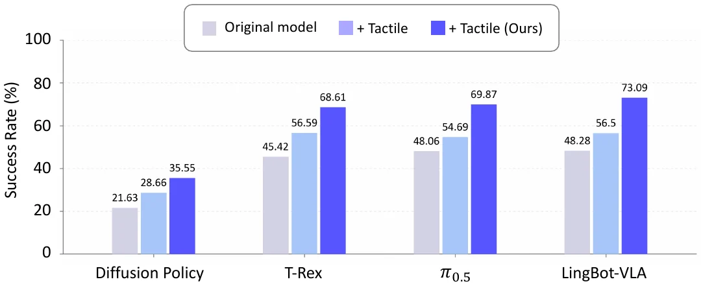
不同策略。26 个任务平均，LingBot-Touch token 让 Diffusion Policy 21.6% → 35.6%，π0.5 48.1% → 69.9%，LingBot-VLA 48.3% → 73.1%，T-Rex 45.4% → 68.6%，收益 13.9、21.8、24.8、23.2 个点，参数增加远不到 0.2%。收益不集中在少数任务：104 个“任务-策略”对里 89 对是三个配置中最好的，99 对不低于原策略。
是表征，不是模态。原始触觉配置是对照组，用来区分“有触觉”和“懂触觉”。加原始信号最多带来约一半的收益（7.0、6.6、8.2、11.2 点），104 对里 22 对变差，有的很严重：LingBot-VLA 的麻将分类 28.8% → 5.0%、转移鸡蛋 65.0% → 28.8%，π0.5 的拉拉链 39.0% → 15.0%。论文的解释：只有 200 条示教，策略学不会从零读一个稀疏高维的传感器，还可能被它分散注意力；冻结 token 到手时已经有意义。
没见过的手。XHand1 的 6 个任务上原始信号几乎无用，四种策略平均变化 +4.6、−1.7、0.0、+2.0 点；同一信号经 LingBot-Touch（不做传感器专用训练）带来 +16.3、+24.5、+17.8、+13.8 点。
收益来自哪里。单任务最大的提升都在视觉判断不了的那一步：拉链头是否卡住（LingBot-VLA 11% → 55%）、扳机是否扣到位（LingBot-VLA 42.5% → 87.5%）、卡是否已经弹出（T-Rex 32% → 92%）、瓶盖是否已经松动（T-Rex 56% → 90%）、最上面的杯子是否已经分离（π0.5 在 XHand1 上 32.5% → 72.5%）。录像里，加触觉的策略恰在这些时刻调整握力和时机，而不是照搬示教轨迹。LingBot-Touch 也不是处处更好：104 对里 9 对低于原始信号配置（5 对是 Diffusion Policy），5 对低于原策略。
我把表 2 的 312 个数录进脚本：两只手各自的列平均和原文 “Mean” 行 24 个数完全一致；26 个任务按 20:6 加权的平均和图 11 柱顶的 12 个数完全一致。计数也都对：Ours 严格高于另两个配置的 89 对（含并列是 93 对）；Ours ≥ 原策略 99 对；原始信号低于原策略 22 对；Ours 低于原始信号 9 对，其中 Diffusion Policy 5 对；Ours 低于原策略 5 对（DP 的扣喷壶、软硬分类、XHand 转移鸡蛋，LingBot-VLA 的 XHand 软硬分类，T-Rex 的 XHand 交接盒子）。
一处措辞对不上：§1 说收益是 “14 到 26 个百分点”，按 26 个任务算是 13.9 到 24.8。26 只在只看 Sharpa Wave 时出现（LingBot-VLA 26.9、T-Rex 26.0；那时 DP 是 13.2）。所以 “14 到 26” 混用了两种口径，较准确的说法是 “14 到 25”。
表 2 表注写 “HaT-Tiny，pretrained on 4K hours”。公开权重按 §1 的说法是在约 5,000 小时上预训练的。§5.4 的五个任务可以把两者对上：LingBot-VLA 在翻方块、弹 SD 卡、扣喷壶、叠杯分离、擦盘子上，表 2 的 Base 平均 (34 + 34 + 42.5 + 95 + 74)/5 = 55.9，Ours 平均 (75 + 64 + 87.5 + 97.5 + 83)/5 = 81.4，正好是图 13a 的 “4k hours” 柱；图 13b 用的 5K 编码器是 82.2（77、66、90、95、83）。也就是说，正文 26 个任务的结果是用比公开权重少 1K 小时的编码器跑的，用公开权重复现时数字可能略有不同。
附录表 7 每个任务按分项给分（例如翻单页 4 分、擦盘子 5 分），表 2 的“成功率”是 20 次得分的平均占满分的比例，不是二值成功率。所以每格应落在 \(100/(20P)\) 的整数倍上：4 分制是 1.25 的倍数，5 分制是整数。我逐格检查了表 7 给出总分的 17 个任务，大部分对得上，以下不行（我的推断，可能是个别格子试验次数不是 20，或表 7 的分制写错）：
表 3 · 仿真 RL 成功率（%，三个种子的均值 ± 标准差，照录原文）
| 手 | 任务 | 无触觉 | 二值 | 原始 | CNN | Ours |
|---|---|---|---|---|---|---|
| Sharpa Wave | Baoding 球旋转 | 34.9 ± 6.8 | 38.2 ± 11.4 | 35.5 ± 8.7 | 44.8 ± 9.3 | 55.5 ± 1.8 |
| 手内旋转 | 11.5 ± 13.5 | 18.3 ± 31.7 | 33.4 ± 19.5 | 26.6 ± 23.1 | 56.4 ± 7.5 | |
| 拧螺母 | 28.3 ± 19.9 | 21.9 ± 13.5 | 55.8 ± 7.5 | 40.8 ± 17.3 | 86.5 ± 4.2 | |
| 转盘子 | 0.5 ± 0.8 | 56.5 ± 40.5 | 82.9 ± 14.7 | 59.9 ± 36.7 | 97.4 ± 2.0 | |
| 转笔 | 31.8 ± 55.1 | 64.2 ± 55.6 | 30.5 ± 52.8 | 62.1 ± 54.0 | 97.1 ± 1.1 | |
| 盲抓 | 33.7 ± 11.1 | 30.8 ± 18.3 | 38.6 ± 18.3 | 67.6 ± 12.4 | 85.2 ± 9.2 | |
| 抓握稳定 | 35.2 ± 14.4 | 27.8 ± 9.8 | 63.3 ± 9.0 | 74.3 ± 15.9 | 80.3 ± 4.5 | |
| 托球平衡 | 0.0 ± 0.0 | 0.0 ± 0.0 | 32.4 ± 4.0 | 31.1 ± 11.3 | 67.7 ± 1.8 | |
| XHand1 | Baoding 球旋转 | 0.1 ± 0.1 | 24.2 ± 2.6 | 2.5 ± 1.8 | 30.4 ± 6.6 | 41.0 ± 2.5 |
| 托球平衡 | 0.0 ± 0.0 | 0.0 ± 0.0 | 10.0 ± 5.9 | 0.7 ± 0.6 | 35.9 ± 4.9 | |
| 盲抓 | 75.0 ± 8.7 | 72.4 ± 4.0 | 55.1 ± 7.2 | 77.0 ± 4.9 | 87.8 ± 4.2 | |
| 抓握稳定 | 6.0 ± 3.2 | 9.7 ± 5.9 | 21.7 ± 12.7 | 31.8 ± 2.1 | 36.6 ± 3.4 | |
| 12 个任务平均（我算的） | 21.4 | 30.3 | 38.5 | 45.6 | 69.0 | |
| 手 | 任务 | 无触觉 | 二值 | 原始 | CNN | Ours |
|---|---|---|---|---|---|---|
| Sharpa Wave | Baoding 球旋转 | 175.8 ± 5.4 | 162.9 ± 22.9 | 169.3 ± 8.2 | 195.7 ± 32.6 | 212.7 ± 0.3 |
| 手内旋转 | 187.7 ± 75.9 | 208.3 ± 75.7 | 188.1 ± 17.0 | 127.9 ± 36.8 | 265.1 ± 28.0 | |
| 拧螺母 | 2269.6 ± 88.0 | 1972.4 ± 300.5 | 2504.0 ± 234.9 | 2383.0 ± 140.8 | 2680.4 ± 176.1 | |
| 转盘子 | 21.2 ± 78.1 | 180.3 ± 218.3 | 286.7 ± 46.6 | 248.8 ± 151.3 | 394.4 ± 17.7 | |
| 转笔 | 220.5 ± 342.8 | 417.7 ± 356.2 | 191.3 ± 326.0 | 396.1 ± 339.5 | 623.3 ± 3.0 | |
| 盲抓 | −22.6 ± 17.9 | −23.2 ± 37.8 | −15.0 ± 41.6 | 34.2 ± 29.5 | 78.5 ± 18.3 | |
| 抓握稳定 | 23.9 ± 3.3 | 23.3 ± 2.3 | 30.6 ± 2.2 | 34.0 ± 3.2 | 36.6 ± 0.6 | |
| 托球平衡 | −190.4 ± 2.3 | −185.1 ± 0.4 | −71.0 ± 16.2 | −71.6 ± 51.0 | 127.2 ± 21.1 | |
| XHand1 | Baoding 球旋转 | 93.6 ± 13.6 | 151.0 ± 5.7 | 115.2 ± 7.0 | 185.2 ± 6.4 | 192.9 ± 14.2 |
| 托球平衡 | −184.9 ± 0.3 | −183.7 ± 0.4 | −128.8 ± 27.9 | −171.9 ± 6.1 | −2.8 ± 17.0 | |
| 盲抓 | 46.0 ± 25.0 | 45.1 ± 10.4 | −17.7 ± 15.9 | 53.1 ± 10.6 | 85.5 ± 8.5 | |
| 抓握稳定 | 10.9 ± 3.1 | 11.5 ± 2.3 | 16.6 ± 4.8 | 18.9 ± 0.7 | 20.5 ± 0.7 |
最终表现。LingBot-Touch 特征在全部 12 个任务上成功率和回报都最高。按任务等权平均，成功率 69.0%，和策略一起训练的 CNN 45.6%，原始信号 38.5%，二值接触 30.3%，无触觉 21.4%。这个顺序本身有信息：学到的表征好于原始信号，预训练的表征好于任务内学的。接触连续变化、策略要跟上的任务差距最大：转盘子 97.4% 对最好的替代 82.9%，转笔 97.1% 对 64.2%；托球平衡 Sharpa Wave 67.7% 对 32.4%，XHand1 35.9% 对 10.0%，二值接触和无触觉在两只手上都是 0。
稳定性。LingBot-Touch 在种子间的标准差最大 9.2、平均 3.9；其他配置在转笔上到 55、转盘子上到 40，意味着有的种子解出任务、有的完全不行。图 12 的曲线也显示：转笔、两只手的托球平衡、XHand1 盲抓上，LingBot-Touch 的回报更早上升，阴影带窄。拧螺母是例外，起步慢但最终回报最高。论文认为，一个已经区分接触状态的冻结表征降低了探索的负担。
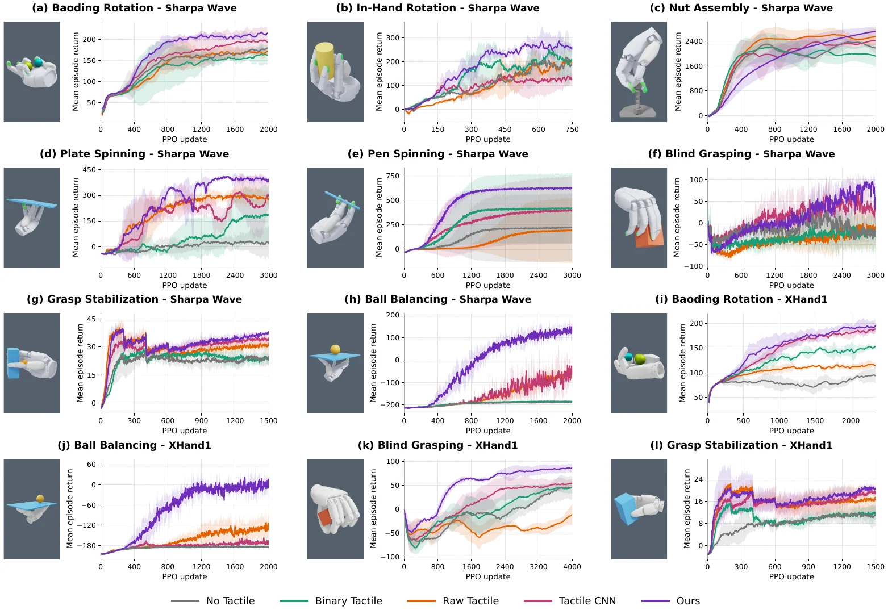
五种配置在 12 个任务上的成功率平均：21.42、30.33、38.48、45.59、68.95，和正文的 21.4、30.3、38.5、45.6、69.0 一致。LingBot-Touch 的标准差最大 9.2（Sharpa 盲抓），平均 3.92；其他配置最大 55.6（转笔二值）和 40.5（转盘子二值），也一致。12 个任务的回报也都是 LingBot-Touch 最高。
排版：pdftotext 默认输出时 XHand1 Baoding 那一行只有四个数，“0.1 ± 0.1 / 93.6 ± 13.6”被挤到了表尾。我用 pdftotext -bbox 看了坐标，0.1 在“无触觉”列，所以那一行是 0.1、24.2、2.5、30.4、41.0。按这个读法平均值才对得上。值得注意的是这一格：无触觉的成功率只有 0.1%，回报却有 93.6，比原始信号的 2.5%（115.2）低得不多，说明这个任务的回报和成功判据（至少 10 次交换）相差较远。
同一个 LingBot-VLA 骨干，每任务 200 条示教后训练，在 Sharpa Wave 的五个任务（翻方块、弹 SD 卡、扣喷壶、叠杯分离、擦盘子）上各测 20 次。策略本身平均 55.9%，加 Tiny 后 82.2%。
预训练时长。1K 到 5K 小时的编码器分别把策略提到 69.8%、74.3%、77.4%、81.4%、82.2%。每多一千小时（都不是这些任务、也不是这台机器人的示教），策略都变好，曲线形状和 §4.3 的探针曲线一样。
换一个编码器。同一策略换成 FTP-1 的触觉编码器是 67.5%，收益不到一半（11.6 对 26.3 个点）。FTP-1 在三个任务上有帮助，但让叠杯分离 95% → 85%、擦盘子 74% → 67%；LingBot-Touch 五个任务都不低于原策略。§4.2 的探针差距转成了策略差距。
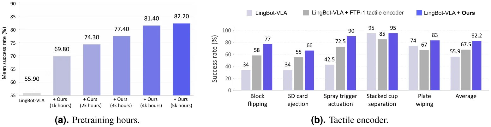
三个发现：表征属于接触而不属于换能器（不更新参数就能在没见过的磁式手上恢复接触物理，并好于带专用适配器的 FTP-1）；机器人学习的收益来自表征而不是模态（冻结 token 在 26 个真机和 12 个仿真任务上都有帮助，原始信号最多一半且常常有害）；表征随时长、传感器种类、模型大小持续变好，信号重建则停滞。
对如何扩展触觉的启示：没有哪种传感器有几千小时数据，也不需要。强度和动态能跨原理迁移，所以可以用最容易采集的传感器采数据，用到部署的手上，代价是一部分空间精度。
局限。真机和仿真需要更多种手；传感器覆盖还能扩，电容式没有进预训练，因为手上的电容数据质量不达标；标准几何和预训练布局集中在指尖，手掌和指节上的接触覆盖不足，扩到整只手是重要的下一步。
表 4 · 预训练语料构成（照录原文）
| 原理 | 传感器 / 厂商 | 平台 | 采集 | 小时 | 回合 | 触点/指 | 采样率 (Hz) |
|---|---|---|---|---|---|---|---|
| 压阻 | Juqiao | 触觉手套（人） | 第一视角 | 2,197 | 86,906 | 9 | 100 |
| Xspark AI | 16 | 60 | |||||
| TACHIN | 124 / 61† | 60 | |||||
| 磁 | PaXini | 触觉手套（人） | 第一视角 | 1,136 | 294,871 | 116 / 96† | 41.7–83.3 |
| 视触觉 | Sharpa Wave 指尖 | 双臂机器人 | 遥操作 | 1,650 | 82,654 | 240×240 | 30 |
| 合计 | 4,983 | 464,431 | |||||
† TACHIN 拇指 124 个有效触点、其余每指 61 个；PaXini 拇指 116 个、其余每指 96 个。
表 5 · 接触物理探针任务（照录原文。\(M\) 是每指触点数，\(J\) 是关节数）
| 任务 | 输入 | 输出 | 训练 (h) | 测试 (h) | 指标 |
|---|---|---|---|---|---|
| 指尖力恢复 | 触觉片段 16×5×M×3 | 力大小 8×5×1 | 2.492 | 0.361 | 力大小 MAE (N) |
| 接触中心 | 触觉片段 16×5×M×3 | 3D 接触中心 8×5×3 | 2.616 | 0.334 | 距离误差 (mm) |
| 接触面积 | 触觉片段 16×5×M×3 | 覆盖率 8×5×1 | 2.616 | 0.334 | 覆盖率 MAE (%) |
| 未来力预测 | 触觉片段 16×5×M×3；关节 5×J | 未来力大小 4×5×1 | 1.843 | 0.484 | 力大小 MAE (N) |
| 触觉到视频检索 | 触觉片段 16×5×M×3 | 相似度分数 | 1.798 | 0.237 | Top-5 召回 (%) |
输出的 8 对应 16 帧每两帧一个标签，和图 5 说的“相邻两帧平均”一致。探针数据都只有一两个小时，量很小。
| 共享设置 | |
|---|---|
| 触觉编码器 | 冻结的预训练目标编码器 |
| 触觉输入 | 16 帧；一只手的 5 根手指 |
| 读出块数 / 宽度 / 头数 | 1 / 192 / 3 |
| MLP 隐层宽度 / dropout | 768 / 0 |
| 优化器 / 学习率 / 权重衰减 | AdamW / 1e−4 / 0.01 |
| 训练轮数 / 每次 GPU 数 | 100 / 8 |
| 学习率调度 / warm-up | 恒定 / 无 |
| 任务 | 损失 | 全局 batch | 指标 | 其他 |
|---|---|---|---|---|
| 力恢复 | 大小 L1 | 128 | MAE (N) | 注意力读出 |
| 接触中心 | 欧氏距离 | 128 | 平均距离 (mm) | 按手指用训练集 z-score 坐标 |
| 接触覆盖 | 覆盖率 L1 | 128 | MAE (pp) | sigmoid 输出；目标在 [0, 1] |
| 未来力预测 | 大小 L1 | 128 | 4 帧大小 MAE (N) | 测得的当前/未来关节位置和最后一帧力大小；状态/融合宽度 64/64 |
| 触觉-视频检索 | 对称 InfoNCE | 64 对 | Recall@5 (%) | 冻结 V-JEPA 2 ViT-L；16 帧视频 256×256；投影维度 1024；τ = 0.07 |
中心和覆盖共用一个探针，两个损失等权。检索 batch 每个录制取一对，负样本跨 GPU 共享。
表 7 列出每个任务的描述、在哪只手上测、打分规则。括号里是分数，除非写明是序数制，分数是累加的；序数制取达到的最高级。图 14、15 是两个任务的五帧示例。
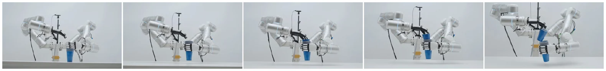
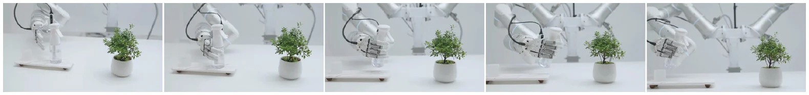
| 任务 | 手 | 描述 | 打分 |
|---|---|---|---|
| 翻单页 | 两只 | 从右往左翻一页 | 接近页边、靠接触移动页、只一页越过书脊、翻完，各 1 分；不得撕页。共 4 |
| 擦盘子 | Sharpa | 擦掉固定盘子上的污渍 | 拿起布、稳住盘、碰到污渍、擦净、放回布并撤手，各 1 分；盘完好稳定。共 5 |
| 叠杯分离 | 两只 | 分开最上面的套杯 | 稳住杯叠、抓顶杯、分开、握 2 s，各 1 分；只分一个、不损坏不扰动。共 4 |
| 麻将分类 | Sharpa | 凭触觉给一张牌分类 | 抓起 1；放对盘 +3，放错 +1；最高 4。识别时牌面朝向策略相机则作废 |
| 药盒补装 | Sharpa | 补装一格并合盖 | 接近卡扣、打开、抓替代物、放入、合盖，各 1 分；替代物留在格里，盖扣好。共 5 |
| 抽名片 | Sharpa | 抽出并拿住一张名片 | 对齐、捏住、抽出、抽出后稳握，各 1 分。共 4 |
| 发牌 | Sharpa | 分出并拿起一张扑克 | 序数制：接近 1、接触 2、滑出 3、抓起 4（PDF 里这一行排版错位，我按内容对应） |
| 运薄壁杯 | 两只 | 不损坏地运送薄壁杯 | 按接触、抓稳、运送、形变控制、放置给分；满分要抓外侧壁、不过度变形、竖直放进目标盘 |
| 弹出 SD 卡 | Sharpa | 弹出并取走 SD 卡壳 | 接近 1；按下并撤指解锁 2；抓住并完全取出 2。共 5 |
| 翻方块 | Sharpa | 把方块翻到目标面 | 抓起 1；手指翻转 2；放进容器 1；目标面朝上 1。只转手腕不给翻转分。共 5 |
| 拔笔帽 | Sharpa | 双手拔笔帽 | 握笔杆、提到两手间、接近笔帽、稳抓笔帽、拔下并拿住，各 1 分。共 5 |
| 拧瓶盖 | Sharpa | 拧开并取下瓶盖 | 序数制：接近 1、有效抓转 2、完全拧开 3、提离 4 |
| 抽袋子 | Sharpa | 从抽取盒里拉出一只袋子 | 稳住盒、接近袋、稳定捏住、明显提出，各 1 分。共 4 |
| 插吸管 | Sharpa | 把吸管扎穿封口膜 | 按规定抓法、接触并压下膜、扎穿、到规定深度给分；不弯折、不打翻、不碰杯底 |
| 开风扇 | Sharpa | 打开并转向风扇 | 稳住风扇、碰按钮、按下开机、转向吹动小旗，各 1 分。共 4 |
| 拉拉链 | Sharpa | 拉上袋子的拉链 | 提起并稳住袋、接近、抓拉链头、拉上、放进容器，各 1 分；拉链保持合上。共 5 |
| 扣喷壶 | Sharpa | 对准并操作喷壶 | 抓起 1；瞄准 1；扳机阶段：扣动 1 或看到喷水 2。最高 4 |
| 软硬分类 | 两只 | 按压海绵按软硬分类 | 按压-松开、类别正确、放进对应盘给分；满分要和预定类别一致 |
| 抽书 | Sharpa | 抽出一本塞紧的书 | 碰到书边 1；部分拉出 2；拇指-手指抓住 1；完全提出 1。共 5 |
| 交接盒子 | 两只 | 两手之间交接盒子 | 独立提起、共同抓握、完全转交、放到目标给分；满分要接收手独立握住并稳定放下不掉 |
| 转移鸡蛋 | XHand1 | 把仿真蛋从一个托移到另一个托 | 抓起、提离、移到目标上方、松开，各 1 分；蛋稳定落座。共 4 |
LingBot-Touch 在真实数据上预训练，能否泛化到仿真触觉要先验证，再做 RL。在 Sharpa Wave 上采了 7,200 秒（2 小时）单手抓取仿真数据，47 个物体、多种抓姿，做四个探针任务（不含检索），超参和指标同真机。
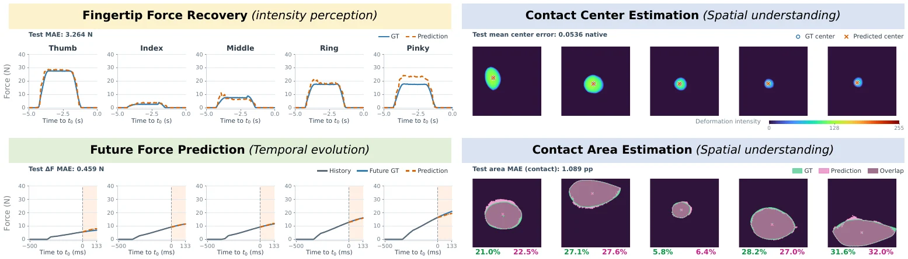
接触中心和面积的结果说明冻结特征在仿真里仍保留可解码的空间接触信息：整个测试集上，有接触区域的平均 Dice 0.708，面积 MAE 1.089 个百分点。力恢复能跟上加载、保持、卸载的趋势，但绝对值有偏差，总 MAE 3.264 N；未来力变化的 MAE 0.459 N，图里的绝对未来力是“当前观测力 + 预测变化”。论文把绝对力的误差归因于 Isaac Sim 基于形变的触觉和真实传感器在响应机制和接触动力学上的差别。
| 任务 | Sharpa | XHand1 | 描述 | 成功判据 |
|---|---|---|---|---|
| Baoding 球旋转 | ✓ | ✓ | 掌内两个不同形状大小的物体反复交换位置 | 至少 10 次交换 |
| 手内旋转 | ✓ | — | 绕指定轴转动 9 种形状、3 种尺度的物体 | 绕指定轴净转至少 1 圈 |
| 拧螺母 | ✓ | — | 在固定螺栓的螺纹约束下用手指拧 4 种尺寸的六角螺母 | 回合结束时离初始角净转至少 5 圈 |
| 转盘子 | ✓ | — | 托住方盘绕竖轴转，控制倾斜并保持支撑接触 | 40 s 内完成 3 圈有效净转 |
| 转笔 | ✓ | — | 手指协调连续转动细长胶囊形笔，不掉 | 12 s 内完成 3 圈有效净转 |
| 盲抓 | ✓ | ✓ | 没有视觉，找到、抓起并保持随机位姿和尺寸的立方体和圆柱 | 对向接触下提升 ≥ 6 cm 并保持 2 s |
| 抓握稳定 | ✓ | ✓ | 在外力和外力矩下稳住长方体，同时减小接触载荷 | 保持 12 s 不失败；平均总法向载荷 ≤ 10 N |
| 托球平衡 | ✓ | ✓ | 用手控制托盘朝向，让滚动的球不掉 | 保持 10 s 不失败 |
仿真触觉生成。沿用 TacMap 的几何穿透深度方法：在弯曲指尖表面预设感测点和法向，仿真时 GPU 并行地沿法向对物体网格做射线查询，估计局部穿透深度，拼成表示接触分布和指尖局部形变的形变图。
触觉观测处理。按两只手的布局构造：Sharpa Wave 每指 96 个感测点，XHand1 每指 120 个。形变值归一化后堆叠 8 帧。
五种观测配置。无触觉只用本体等非触觉观测；二值触觉是对形变阈值化的接触指示；原始触觉历史直接用形变序列；触觉 CNN 是和策略一起优化的可训练编码器；LingBot-Touch 用冻结编码器处理形变，再接可训练读出。给预训练编码器时，标量形变放在三通道输入的第三通道，前两个通道置零。触觉特征和非触觉观测拼接后输入策略网络。
协议。同一任务内，所有配置用同一套 RL 框架、动作空间、奖励、环境随机化和训练设置，唯一差别是触觉怎样表示和处理。
C.3 说标量形变放在第三通道。Sharpa Wave 的真实信号也是标量形变，显然走视触觉分支。但 XHand1 在仿真里同样是“120 点标量形变”，而真机 XHand1 是三轴磁信号、走磁式分支。仿真 XHand1 用磁式分支（前两通道置零，和真机分布不同）还是视触觉分支（布局和预训练的视触觉不同），论文没写，代码也没有仿真部分。未核实。另外，仿真 XHand1 用 120 个点，真机实验却降到 96 个，两者也不同。
结论先说：仓库只给推理：冻结的目标编码器、三类传感器的数据接口、Sharpa 和 XHand 各 30 对样例。预测器、掩码、EMA、增广、预训练数据、探针头、策略读出和接入代码都没有公开。这和论文 §1 “公开推理代码、少量样例、Tiny 和 Small 权重”的承诺一致。
代码版本：dec8025（2026-11-11），Apache-2.0。包名 lingbot-touch 0.5.0，Python 3.12，固定 torch 2.11.0、numpy 2.4.4。仓库里还放了论文 PDF（Git LFS），我比对过文本，和 arXiv v1 只差页边的 arXiv 戳记。
| 部分 | 文件 | 内容 |
|---|---|---|
| 编码器 | tactile_jepa_inference/model.py、tokenizer.py、rope.py | TargetEncoder = 按模态路由的 PointTokenizer（Linear(3τ→d)、GELU、Linear(d→d)）+ 12 层 pre-norm Transformer（注意力里对 q、k 做五轴 RoPE）+ 四层输出各 LayerNorm 后拼接。requires_grad(False)，train() 被改成永远 eval |
| 加载 | loading.py | 读 config.json 和 encoder.pt；检查键、形状、dtype、有限值后严格加载；weights_only=True |
| 数据接口 | data_interfaces/interfaces.py、geometry.py、xhand.py、infer_sharpa.py、infer_xhand.py | 原始信号 → 归一化 → 放进固定手指顺序；几何标定；XHand 120 → 96 选点 |
| 重采样 | sampling.py、pretraining_sampling.py，data/*.json | 12 种参考布局（磁 96/76/64/48/32/24，压阻 61/16/9，视触觉 200/96/32）；PaXini 原生 116 点和 Sharpa 240×240 形变图到参考布局的固定映射 |
| 命令行 | infer.py → data_interfaces/infer.py | --input-format sharpa|xhand|normalized，输出已存在时拒绝覆盖 |
| 测试 | tests/ | 样例哈希、Tiny/Small 真实推理、CLI 一致性、归一化、补齐、三种模态路由；要先下载权重 |
权重。Hugging Face robbyant/lingbot-touch-tiny、-small（也在 ModelScope），每个只有 config.json 和 encoder.pt（Tiny 21.9 MB，Small 87.1 MB），Apache-2.0。README 说“需要有权限的账号”，但我 2026-11-17 查 Hugging Face API，两个仓库的 gated 都是 False，config.json 可以直接读。放到 checkpoints/lingbot-touch-tiny/ 下。
两个模型的 config.json（Hugging Face，2026-11-09 版）
| 键 | Tiny | Small |
|---|---|---|
| embed_dim / depth / num_heads | 192 / 12 / 3 | 384 / 12 / 6 |
| mlp_ratio | 4.0 | 4.0 |
| tubelet_size | 2 | 4 |
| output_layers | [2, 5, 8, 11] | [2, 5, 8, 11] |
| address_rope | time_theta = finger_theta = 10000，spatial_theta = 100，spatial_coordinate_scale = π/2 | |
| use_shared_projector | false | false |
| 参数量（我算的） | 5,455,488 | 21,755,904 |
| 输出通道 C | 768 | 1536 |
输入接口（见仓库 DATA_INTERFACE_GUIDE.md）。编码器只认归一化后的张量：
signal：[B,T,5,M,3]，手指顺序固定为拇指、食指、中指、无名指、小指；\(T\) 必须能被 tubelet 整除（Tiny 2，Small 4），样例是 16 帧。左右手分别推理，不要拼成 10 指。pos_xyz：[5,M,3] 或 [B,5,M,3]，标准指尖空间坐标；左手要先转成“标准右手”。coverage_mask：[5,M] 布尔，标哪些槽位是真实触点。手指触点数不同时按最多的补齐，补的槽位 False。真实触点信号为零也要 True：它决定哪些槽位产生 token、参与自注意力，不是接触检测。modality：magnetic、piezoresistive、visuotactile 三选一，按传感原理选，每次调用只走一个 tokenizer。三类传感器怎样进 tokenizer。
| 类型 | 每个触点的 3 个通道 | 归一化 | 参考布局 |
|---|---|---|---|
| 视触觉（Sharpa Wave） | [0, 0, z]，z 是解码后的形变强度（不是 RGB） | z/255，截到 [0, 1] | 200 / 96 / 32 点每指；样例是 200 点，已是标准坐标 |
| 磁（XHand1） | [x, y, z] 三轴 | 除以 [128, 128, 255]，xy 截到 [−1, 1]、z 截到 [0, 1] | 120 点先选成 96 点，用内置的 magnetic96 坐标 |
| 磁（PaXini 原生） | [x, y, z] | 先按固定权重重采样，再除以 [2.56, 2.56, 5.12] | 96 / 76 / 64 / 48 / 32 / 24 |
| 压阻 | [0, 0, z] | 按该传感器确认过的量程，xy 置零 | 61 / 16 / 9；61 点布局拇指 124 点，M 补到 124 |
输出。latent [B,N,C]，以及每个 token 的 time_id [N]、finger_id [N]、pos_xyz [B,N,3]，\(N=(T/\tau)\times\)有效触点数。按样例算：
| 输入 | Tiny | Small |
|---|---|---|
| Sharpa 样例 16 帧 × 5 × 200 | [1, 8000, 768] | [1, 4000, 1536] |
| XHand 样例 16 帧 × 5 × 96（选点后） | [1, 3840, 768] | [1, 1920, 1536] |
没有池化后的向量，也没有任务头。README 强烈建议用注意力读出（可学习或任务条件的 query 对所有 token 做交叉注意力），不要默认用逐 token 线性投影或 mean/max 池化：自注意力之后每个 token 已经混了其他触点和时刻的信息，按地址挑 token 或池化并不能分离出某根手指、某段时间的信息。论文的探针（1 块、宽 192、3 头）和策略接入（每手 40 个读出 token）都是这个做法，但这两部分的代码没有公开。
xhand.py 先取 96 个固定点；如果某帧某指 z 最大的触点不在这 96 个里，就把它映射到对应目标槽位替换进去（README 说是“保峰”，不是高斯平均）。论文只说“降采样到 96”。README 还说作者验证过 120 → 96 比直接用 120 点的表征更好，论文说模型也能直接吃 120 点，没给对比数字。SharedPointwiseProjector（tokenizer 之后的残差 MLP）在代码里存在，两个公开模型都关着，论文没提。新闻稿里常见的几个数，和论文、代码对照如下。
| 新闻稿 | 论文 / 代码出处 | 结论 |
|---|---|---|
| 4,983 小时预训练数据 | 图 2、§3.1、表 4：2,197 + 1,136 + 1,650 | 对得上；正文多处说 “5,000 小时” 是取整（读者注 1） |
| Tiny 5.46M 参数 | §4.1；按 config 算 5,455,488 | 对得上（读者注 7） |
| Small 21.76M 参数 | §4.1；按 config（tubelet 4）算 21,755,904 | 对得上；但只在 tubelet 为 4 时成立，和正文“两帧一个 token”矛盾（读者注 3） |
| 原始信号 62.5% vs LingBot-Touch 90% | 表 2：T-Rex 在 Sharpa Wave 拧瓶盖，Base 56.25、+原始 62.50、Ours 90.00 | 数字对得上，但这是 104 对里的一个单任务（读者注 18） |
我在表 2 的 104 个“任务-策略”对里找 “+原始 = 62.5、Ours = 90” 的组合，只有一格：T-Rex 在 Sharpa Wave 上拧瓶盖（Base 56.25）。正文 §5.2 引的是同一格，但写的是和原策略比（“56% to 90%”）。这是收益较大的一格，不代表平均水平：T-Rex 在 Sharpa Wave 20 个任务上平均是 57.99%（原始）对 70.05%（Ours），26 个任务是 56.59% 对 68.61%；四种策略平均下来，原始信号比原策略多 6.6 到 11.2 个点，LingBot-Touch 多 13.9 到 24.8 个点。另外这里的“成功率”是分项得分的平均（读者注 14）。
以下各条都是本页加的核算或对照，不属于论文内容。点编号跳到对应位置。
论文没写、我也没找到的：预训练最终的片段长度和 batch 大小；EMA 调度的具体形式；三种来源各自的布局采样比例；预测器的层数和宽度；探针和策略读出的代码；T-Rex 的论文编号。
文中提到的模型、传感器和工具。除注明的以外，链接在 2026 年 11 月 17 日用脚本核对都返回 200，arXiv 编号核对过标题。
| 名称 | 是什么 | 主页 | 论文 |
|---|---|---|---|
| LingBot-Touch | 本文 | 项目页 · HF · ModelScope | 2611.12806 |
| FTP-1 | 主要对比的触觉基础策略 | – | 2606.13102 |
| Diffusion Policy | 模仿学习基线 | diffusion-policy.cs.columbia.edu | 2303.04137 |
| π0.5 | VLA 基线 | physicalintelligence.company（脚本访问返回 429，未核对） | 2504.16054 |
| LingBot-VLA | VLA 基线（原文参考文献 [31]） | – | 2607.06403 |
| T-Rex | 触觉反应式 VLA 基线 | – | 原文参考文献 [21]，没有编号 |
| V-JEPA | 评测协议来源 | 代码 | 2404.08471 |
| V-JEPA 2 | 检索任务的视频编码器（ViT-L） | 代码 | 2506.09985 |
| V-JEPA 2.1 | 多层监督的来源，本站有精读 | – | 2603.14482 |
| I-JEPA | JEPA 的图像版 | – | 2301.08243 |
| Sparsh | 光学触觉自监督表征 | – | 2410.24090 |
| T3 | 可迁移触觉 Transformer | – | 2406.13640 |
| UniTouch | 触觉接多模态嵌入 | – | 2401.18084 |
| AnyTouch | 多视触觉传感器统一表征 | – | 2502.12191 |
| Sharpa Wave | 视触觉指尖灵巧手（见过） | sharpa.com | – |
| XHand1 | 磁式指尖灵巧手（没见过）；链接是星动纪元官网，我认为 XHand 是它的产品，论文没给链接 | robotera.com | – |
| PaXini | 磁式（霍尔）触觉手套 | paxini.com | – |
| Isaac Sim | 仿真器（附录 C） | developer.nvidia.com/isaac/sim | – |
| UMAP | 降维可视化 | umap-learn.readthedocs.io | 1802.03426 |
先说结论：EMA 是 exponential moving average，指数滑动平均。在这篇论文里，目标编码器不靠梯度训练，它的每个参数都是上下文编码器同一参数的“慢速平均”。每一步训练后照下式更新：
\[ \bar\theta \leftarrow m\,\bar\theta + (1-m)\,\theta \]\(\theta\) 是上下文编码器（在线网络，靠梯度更新）的参数，\(\bar\theta\) 是目标编码器的参数，\(m\) 是动量，取值很接近 1。\(m=0.999\) 就是每步只往在线参数挪 0.1%。出处：§3.2 式 (4) 后一段（“target tokenizers and encoder are updated exclusively through an EMA of their online counterparts”）。
为什么叫“指数”：把上式展开，\(\bar\theta\) 是过去所有在线参数的加权和，\(k\) 步之前那份的权重是 \((1-m)\,m^{k}\)，越早的越小，按指数衰减。所以目标编码器大致等于“最近约 \(1/(1-m)\) 步的在线编码器的平均”：
| 动量 \(m\) | 平均窗口 \(1/(1-m)\) | 半衰期 \(\ln 0.5/\ln m\) | 1,000 步前参数的残留 \(m^{1000}\) |
|---|---|---|---|
| 0.998 | 500 步 | 346 步 | 13.5% |
| 0.999 | 1,000 步 | 693 步 | 36.8% |
| 0.99925 | 1,333 步 | 924 步 | 47.2% |
小演示 · 一个参数在训练中的轨迹。灰线是上下文编码器（梯度更新，抖动大），蓝线是目标编码器（EMA）。拖动 m 看蓝线跟得多紧。
示意：为了在 600 步里看清效果，滑块用的是 0.9–0.999 的较小动量，不是论文的数值；轨迹是随机生成的。
在 LingBot-Touch 里两个编码器各做什么：
为什么要这样做：JEPA 在隐空间里做预测，答案也是网络自己算出来的。如果目标编码器也直接用梯度训练，最省事的解就是两边都输出常数，损失为零但什么都没学到，这叫表示塌缩。让目标慢一拍、不接梯度，在线网络就追的是一个缓慢移动、相对稳定的目标，能避开这个平凡解。这也是 §4.4 里本文损失“先降后升到非零平台”的原因：目标在移动，损失不会一直降到零。
论文自己的证据（表 1 的 EMA 动量三行）：
| 动量 | 力误差 (N) ↓ | R@5 (%) ↑ | 结果 |
|---|---|---|---|
| 0.998 → 1.0 | 7.221 | 1.375 | 塌缩 |
| 0.999 → 1.0 | 1.529 | 34.625 | 最好 |
| 0.99925（恒定） | 2.284 | 14.375 | 默认配置 |
“0.999 → 1.0”是训练中把 \(m\) 从 0.999 逐渐升到 1.0：开始时目标跟得较快，后期几乎冻结。只要起点从 0.999 降到 0.998（平均窗口从 1,000 步缩到 500 步），目标就跟得太紧，模型塌缩，检索只有 1.4%。论文没写这个调度是线性还是余弦（代码与使用要点里列在“没写的”中），公开代码也不含训练部分。
和下游使用的关系：训练结束后，冻结并发布的是 EMA 目标编码器，不是上下文编码器（§4.1 协议、§3.2 末段）。它见过完整输入，参数是长时间平均，更平滑，所以拿来给探针、VLA 和 RL 提供触觉 token。官方仓库里的 encoder.pt 就是它。
同样的做法出自 BYOL，I-JEPA、V-JEPA 和 DINO 系列也用；同站 DINOv3 页的教师网络也是学生的 EMA。
配合图 3 重画一起看。哪些是论文写的、哪些是我按 MAE / I-JEPA 的通行解释补的，下面分开标了。
先说结论：整个训练是在做一道“看一部分、猜其余部分”的填空题。
小演示 · 12 个 token 走一遍（真实的 Sharpa 样例是 8,000 个）。点按钮一步步看。
1. 为什么叫“上下文编码器”。这是 JEPA 系列（I-JEPA、V-JEPA）的叫法：露出来的那部分是“上下文”（context），被遮住、要去猜的那部分是“目标”（target）。上下文编码器就是“只编码上下文”的那个编码器，和语言里“根据上下文猜词”是一个意思。原文：“present only \(\mathbf X_{\mathcal C}\) to a context encoder”（§3.2 第一段）。
2. HaT 是什么、为什么在中间。HaT（Haptic Transformer）是一个 12 层的 Transformer 编码器，所有传感器共用。它前面是按传感器分开的 tokenizer，后面是按传感器分开的预测器投影，所以它夹在中间。论文的设计原则就是“传感器专用的参数只放在网络边界的浅层投影里”（§3.2 tokenizer 一段）：
| 位置 | 部件 | 分不分传感器 | 作用 |
|---|---|---|---|
| 入口 | tokenizer（两层 MLP） | 分，三个 | 把各传感器不同含义的读数翻成同一种 token |
| 中间 | HaT（12 层） | 共享 | 在 token 之间做注意力，学“接触”本身：哪里压、压多大、怎么变；位置通过 5D RoPE 进来 |
| 出口 | 预测器的输入、输出投影 | 分，三个 | 只在训练时用 |
放在中间、而且共享，好处是三种传感器的数据都在训练同一个 HaT，相当于把 4,983 小时合在一起用。HaT 也是唯一留到下游的主体：训练完扔掉预测器，只留（目标端的）tokenizer + HaT，冻结后给策略产出触觉 token。
3. 为什么先去掉被掩码的 token，过 HaT 后再加回来。论文只写了做法（“上下文编码器只看可见 token；预测器把可见 token 的表征和掩码 token 一起处理”，式 (3) 下一段），没解释原因。下面三条是 MAE / I-JEPA 的通行理由，放在这里同样成立：
还有一个论文明确写的细节：同一个触点在所有时间窗都被遮住（掩码一段）。否则模型可以从同一触点前一帧的读数直接抄过来，题就太简单了。
4. EMA 做什么。“标准答案”也是网络算出来的。如果目标编码器也直接用梯度训练，两边可以一起输出常数，损失为零，什么都没学到（表示塌缩）。所以目标编码器不接梯度（图里的 stop grad），参数只按 \(\bar\theta\leftarrow m\bar\theta+(1-m)\theta\) 慢慢跟上上下文编码器，\(m\) 从 0.999 升到 1.0。表 1 里起点改成 0.998 就塌缩了。细节和小演示见问 1。
一句话串起来：tokenizer 把不同传感器翻成同一种 token → 遮掉 80% → HaT 只理解剩下的 20% → 在空位放带地址的掩码 token → 预测器填空 → 和 EMA 目标编码器看完整片段给出的答案比 L1 距离。训练完只留 tokenizer + HaT。